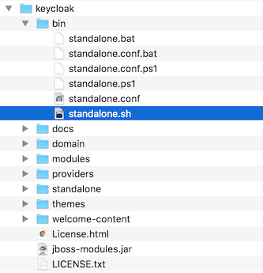
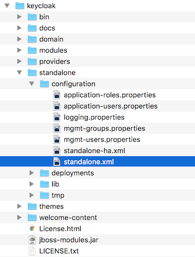
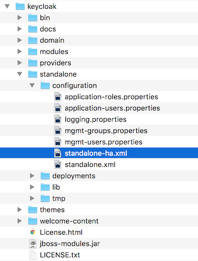
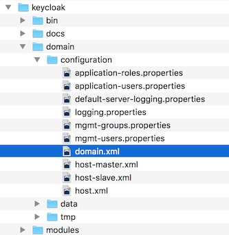
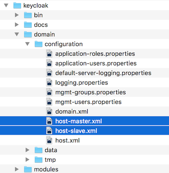
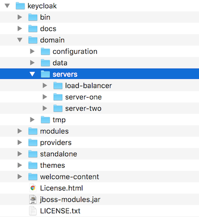
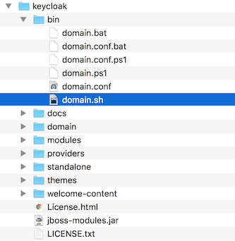

Guide Overview
The purpose of this guide is to walk through the steps that need to be completed prior to booting up the Keycloak server for the first time. If you just want to test drive Keycloak, it pretty much runs out of the box with its own embedded and local-only database. For actual deployments that are going to be run in production you’ll need to decide how you want to manage server configuration at runtime (standalone or domain mode), configure a shared database for Keycloak storage, set up encryption and HTTPS, and finally set up Keycloak to run in a cluster. This guide walks through each and every aspect of any pre-boot decisions and setup you must do prior to deploying the server.
One thing to particularly note is that Keycloak is derived from the WildFly Application Server. Many aspects of configuring Keycloak revolve around WildFly configuration elements. Often this guide will direct you to documentation outside of the manual if you want to dive into more detail.
Recommended Additional External Documentation
Keycloak is built on top of the WildFly application server and its sub-projects like Infinispan (for caching) and Hibernate (for persistence). This guide only covers basics for infrastructure-level configuration. It is highly recommended that you peruse the documentation for WildFly and its sub projects. Here is the link to the documentation:
Installation
Installing Keycloak is as simple as downloading it and unzipping it. This chapter reviews system requirements as well as the directory structure of the distribution.
System Requirements
These are the requirements to run the Keycloak authentication server:
-
Can run on any operating system that runs Java
-
Java 8 JDK
-
zip or gzip and tar
-
At least 512M of RAM
-
At least 1G of diskspace
-
A shared external database like PostgreSQL, MySQL, Oracle, etc. Keycloak requires an external shared database if you want to run in a cluster. Please see the database configuration section of this guide for more information.
-
Network multicast support on your machine if you want to run in a cluster. Keycloak can be clustered without multicast, but this requires a bunch of configuration changes. Please see the clustering section of this guide for more information.
-
On Linux, it is recommended to use
/dev/urandomas a source of random data to prevent Keycloak hanging due to lack of available entropy, unless/dev/randomusage is mandated by your security policy. To achieve that on Oracle JDK 8 and OpenJDK 8, set thejava.security.egdsystem property on startup tofile:/dev/urandom.
Installing Distribution Files
The Keycloak Server has two downloadable distributions:
-
'keycloak-11.0.0.[zip|tar.gz]'
-
'keycloak-overlay-11.0.0.[zip|tar.gz]'
The 'keycloak-11.0.0.[zip|tar.gz]' file is the server only distribution. It contains nothing other than the scripts and binaries
to run the Keycloak Server. To unpack this file just run your operating system’s unzip or gunzip and tar utilities.
The 'keycloak-overlay-11.0.0.[zip|tar.gz]' file is a WildFly add-on that allows you to install Keycloak Server on top of an existing
WildFly distribution. We do not support users that want to run their applications and Keycloak on the same server instance. To install the Keycloak Service Pack, just unzip it in the root directory
of your WildFly distribution, open the bin directory in a shell and run ./jboss-cli.[sh|bat] --file=keycloak-install.cli.
To unpack of these files run the unzip or gunzip and tar utilities.
Distribution Directory Structure
This chapter walks you through the directory structure of the server distribution.
Let’s examine the purpose of some of the directories:
- bin/
-
This contains various scripts to either boot the server or perform some other management action on the server.
- domain/
-
This contains configuration files and working directory when running Keycloak in domain mode.
- modules/
-
These are all the Java libraries used by the server.
- standalone/
-
This contains configuration files and working directory when running Keycloak in standalone mode.
- standalone/deployments/
-
If you are writing extensions to Keycloak, you can put your extensions here. See the Server Developer Guide for more information on this.
- themes/
-
This directory contains all the html, style sheets, JavaScript files, and images used to display any UI screen displayed by the server. Here you can modify an existing theme or create your own. See the Server Developer Guide for more information on this.
Choosing an Operating Mode
Before deploying Keycloak in a production environment you need to decide which type of operating mode you are going to use. Will you run Keycloak within a cluster? Do you want a centralized way to manage your server configurations? Your choice of operating mode affects how you configure databases, configure caching and even how you boot the server.
| The Keycloak is built on top of the WildFly Application Server. This guide will only go over the basics for deployment within a specific mode. If you want specific information on this, a better place to go would be the WildFly 21 Documentation. |
Standalone Mode
Standalone operating mode is only useful when you want to run one, and only one Keycloak server instance. It is not usable for clustered deployments and all caches are non-distributed and local-only. It is not recommended that you use standalone mode in production as you will have a single point of failure. If your standalone mode server goes down, users will not be able to log in. This mode is really only useful to test drive and play with the features of Keycloak
Standalone Boot Script
When running the server in standalone mode, there is a specific script you need to run to boot the server depending on your operating system. These scripts live in the bin/ directory of the server distribution.

To boot the server:
$ .../bin/standalone.sh> ...\bin\standalone.batStandalone Configuration
The bulk of this guide walks you through how to configure infrastructure level aspects of Keycloak. These aspects are configured in a configuration file that is specific to the application server that Keycloak is a derivative of. In the standalone operation mode, this file lives in …/standalone/configuration/standalone.xml. This file is also used to configure non-infrastructure level things that are specific to Keycloak components.

| Any changes you make to this file while the server is running will not take effect and may even be overwritten by the server. Instead use the command line scripting or the web console of WildFly. See the WildFly 21 Documentation for more information. |
Standalone Clustered Mode
Standalone clustered operation mode is for when you want to run Keycloak within a cluster. This mode requires that you have a copy of the Keycloak distribution on each machine you want to run a server instance. This mode can be very easy to deploy initially, but can become quite cumbersome. To make a configuration change you’ll have to modify each distribution on each machine. For a large cluster this can become time consuming and error prone.
Standalone Clustered Configuration
The distribution has a mostly pre-configured app server configuration file for running within a cluster. It has all the specific infrastructure settings for networking, databases, caches, and discovery. This file resides in …/standalone/configuration/standalone-ha.xml. There’s a few things missing from this configuration. You can’t run Keycloak in a cluster without configuring a shared database connection. You also need to deploy some type of load balancer in front of the cluster. The clustering and database sections of this guide walk you through these things.

| Any changes you make to this file while the server is running will not take effect and may even be overwritten by the server. Instead use the command line scripting or the web console of WildFly. See the WildFly 21 Documentation for more information. |
Standalone Clustered Boot Script
You use the same boot scripts to start Keycloak as you do in standalone mode. The difference is that you pass in an additional flag to point to the HA config file.
To boot the server:
$ .../bin/standalone.sh --server-config=standalone-ha.xml> ...\bin\standalone.bat --server-config=standalone-ha.xmlDomain Clustered Mode
Domain mode is a way to centrally manage and publish the configuration for your servers.
Running a cluster in standard mode can quickly become aggravating as the cluster grows in size. Every time you need to make a configuration change, you have to perform it on each node in the cluster. Domain mode solves this problem by providing a central place to store and publish configurations. It can be quite complex to set up, but it is worth it in the end. This capability is built into the WildFly Application Server which Keycloak derives from.
| The guide will go over the very basics of domain mode. Detailed steps on how to set up domain mode in a cluster should be obtained from the WildFly 21 Documentation. |
Here are some of the basic concepts of running in domain mode.
- domain controller
-
The domain controller is a process that is responsible for storing, managing, and publishing the general configuration for each node in the cluster. This process is the central point from which nodes in a cluster obtain their configuration.
- host controller
-
The host controller is responsible for managing server instances on a specific machine. You configure it to run one or more server instances. The domain controller can also interact with the host controllers on each machine to manage the cluster. To reduce the number of running process, a domain controller also acts as a host controller on the machine it runs on.
- domain profile
-
A domain profile is a named set of configuration that can be used by a server to boot from. A domain controller can define multiple domain profiles that are consumed by different servers.
- server group
-
A server group is a collection of servers. They are managed and configured as one. You can assign a domain profile to a server group and every service in that group will use that domain profile as their configuration.
In domain mode, a domain controller is started on a master node. The configuration for the cluster resides in the domain controller. Next a host controller is started on each machine in the cluster. Each host controller deployment configuration specifies how many Keycloak server instances will be started on that machine. When the host controller boots up, it starts as many Keycloak server instances as it was configured to do. These server instances pull their configuration from the domain controller.
| In some environments, such as Microsoft Azure, the domain mode is not applicable. Please consult the WildFly documentation. |
Domain Configuration
Various other chapters in this guide walk you through configuring various aspects like databases, HTTP network connections, caches, and other infrastructure related things. While standalone mode uses the standalone.xml file to configure these things, domain mode uses the …/domain/configuration/domain.xml configuration file. This is where the domain profile and server group for the Keycloak server are defined.

| Any changes you make to this file while the domain controller is running will not take effect and may even be overwritten by the server. Instead use the command line scripting or the web console of WildFly. See the WildFly 21 Documentation for more information. |
Let’s look at some aspects of this domain.xml file. The auth-server-standalone and auth-server-clustered profile XML blocks are where you are going to make the bulk of your configuration decisions.
You’ll be configuring things here like network connections, caches, and database connections.
<profiles>
<profile name="auth-server-standalone">
...
</profile>
<profile name="auth-server-clustered">
...
</profile>The auth-server-standalone profile is a non-clustered setup. The auth-server-clustered profile is the clustered setup.
If you scroll down further, you’ll see various socket-binding-groups defined.
<socket-binding-groups>
<socket-binding-group name="standard-sockets" default-interface="public">
...
</socket-binding-group>
<socket-binding-group name="ha-sockets" default-interface="public">
...
</socket-binding-group>
<!-- load-balancer-sockets should be removed in production systems and replaced with a better software or hardware based one -->
<socket-binding-group name="load-balancer-sockets" default-interface="public">
...
</socket-binding-group>
</socket-binding-groups>This configration defines the default port mappings for various connectors that are opened with each
Keycloak server instance. Any value that contains ${…} is a value that can be overridden on the command line
with the -D switch, i.e.
$ domain.sh -Djboss.http.port=80
The definition of the server group for Keycloak resides in the server-groups XML block. It specifies the domain profile
that is used (default) and also some default boot arguments for the Java VM when the host controller boots an instance. It also
binds a socket-binding-group to the server group.
<server-groups>
<!-- load-balancer-group should be removed in production systems and replaced with a better software or hardware based one -->
<server-group name="load-balancer-group" profile="load-balancer">
<jvm name="default">
<heap size="64m" max-size="512m"/>
</jvm>
<socket-binding-group ref="load-balancer-sockets"/>
</server-group>
<server-group name="auth-server-group" profile="auth-server-clustered">
<jvm name="default">
<heap size="64m" max-size="512m"/>
</jvm>
<socket-binding-group ref="ha-sockets"/>
</server-group>
</server-groups>Host Controller Configuration
Keycloak comes with two host controller configuration files that reside in the …/domain/configuration/ directory: host-master.xml and host-slave.xml. host-master.xml is configured to boot up a domain controller, a load balancer, and one Keycloak server instance. host-slave.xml is configured to talk to the domain controller and boot up one Keycloak server instance.
| The load balancer is not a required service. It exists so that you can easily test drive clustering on your development machine. While usable in production, you have the option of replacing it if you have a different hardware or software based load balancer you want to use. |

To disable the load balancer server instance, edit host-master.xml and comment out or remove the "load-balancer" entry.
<servers>
<!-- remove or comment out next line -->
<server name="load-balancer" group="loadbalancer-group"/>
...
</servers>Another interesting thing to note about this file is the declaration of the authentication server instance. It has
a port-offset setting. Any network port defined in the domain.xml socket-binding-group or the server group
will have the value of port-offset added to it. For this example domain setup we do this so that ports opened by
the load balancer server don’t conflict with the authentication server instance that is started.
<servers>
...
<server name="server-one" group="auth-server-group" auto-start="true">
<socket-bindings port-offset="150"/>
</server>
</servers>Server Instance Working Directories
Each Keycloak server instance defined in your host files creates a working directory under …/domain/servers/{SERVER NAME}. Additional configuration can be put there, and any temporary, log, or data files the server instance needs or creates go there too. The structure of these per server directories ends up looking like any other WildFly booted server.

Domain Boot Script
When running the server in domain mode, there is a specific script you need to run to boot the server depending on your operating system. These scripts live in the bin/ directory of the server distribution.

To boot the server:
$ .../bin/domain.sh --host-config=host-master.xml> ...\bin\domain.bat --host-config=host-master.xmlWhen running the boot script you will need to pass in the host controlling configuration file you are going to use via the
--host-config switch.
Clustered Domain Example
You can test drive clustering using the out-of-the-box domain.xml configuration. This example domain is meant to run on one machine and boots up:
-
a domain controller
-
an HTTP load balancer
-
2 Keycloak server instances
To simulate running a cluster on two machines, you’ll need to run the domain.sh script twice to start two separate
host controllers. The first will be the master host controller which will start a domain controller, an HTTP load balancer, and one
Keycloak authentication server instance. The second will be a slave host controller that only starts
up an authentication server instance.
Setup Slave Connection to Domain Controller
Before you can boot things up though, you have to configure the slave host controller so that it can talk securely to the domain
controller. If you do not do this, then the slave host will not be able to obtain the centralized configuration from the domain controller.
To set up a secure connection, you have to create a server admin user and a secret that
will be shared between the master and the slave. You do this by running the …/bin/add-user.sh script.
When you run the script select Management User and answer yes when it asks you if the new user is going to be used
for one AS process to connect to another. This will generate a secret that you’ll need to cut and paste into the
…/domain/configuration/host-slave.xml file.
$ add-user.sh
What type of user do you wish to add?
a) Management User (mgmt-users.properties)
b) Application User (application-users.properties)
(a): a
Enter the details of the new user to add.
Using realm 'ManagementRealm' as discovered from the existing property files.
Username : admin
Password recommendations are listed below. To modify these restrictions edit the add-user.properties configuration file.
- The password should not be one of the following restricted values {root, admin, administrator}
- The password should contain at least 8 characters, 1 alphabetic character(s), 1 digit(s), 1 non-alphanumeric symbol(s)
- The password should be different from the username
Password :
Re-enter Password :
What groups do you want this user to belong to? (Please enter a comma separated list, or leave blank for none)[ ]:
About to add user 'admin' for realm 'ManagementRealm'
Is this correct yes/no? yes
Added user 'admin' to file '/.../standalone/configuration/mgmt-users.properties'
Added user 'admin' to file '/.../domain/configuration/mgmt-users.properties'
Added user 'admin' with groups to file '/.../standalone/configuration/mgmt-groups.properties'
Added user 'admin' with groups to file '/.../domain/configuration/mgmt-groups.properties'
Is this new user going to be used for one AS process to connect to another AS process?
e.g. for a slave host controller connecting to the master or for a Remoting connection for server to server EJB calls.
yes/no? yes
To represent the user add the following to the server-identities definition <secret value="bWdtdDEyMyE=" />| The add-user.sh does not add user to Keycloak server but to the underlying JBoss Enterprise Application Platform. The credentials used and generated in the above script are only for example purpose. Please use the ones generated on your system. |
Next, cut and paste the secret value into the …/domain/configuration/host-slave.xml file as follows:
<management>
<security-realms>
<security-realm name="ManagementRealm">
<server-identities>
<secret value="bWdtdDEyMyE="/>
</server-identities>You will also need to add the username of the created user in the …/domain/configuration/host-slave.xml file:
<remote security-realm="ManagementRealm" username="admin">Run the Boot Scripts
Since we’re simulating a two node cluster on one development machine, you’ll run the boot script twice:
$ domain.sh --host-config=host-master.xml$ domain.sh --host-config=host-slave.xmlTo try it out, open your browser and go to http://localhost:8080/auth.
Cross-Datacenter Replication Mode
|
Cross-Datacenter Replication Mode is Technology Preview and is not fully supported. |
Cross-Datacenter Replication mode lets you run Keycloak in a cluster across multiple data centers, most typically using data center sites that are in different geographic regions. When using this mode, each data center will have its own cluster of Keycloak servers.
This documentation will refer to the following example architecture diagram to illustrate and describe a simple Cross-Datacenter Replication use case.

Prerequisites
As this is an advanced topic, we recommend you first read the following, which provide valuable background knowledge:
-
Clustering with Keycloak When setting up for Cross-Datacenter Replication, you will use more independent Keycloak clusters, so you must understand how a cluster works and the basic concepts and requirements such as load balancing, shared databases, and multicasting.
-
Infinispan Cross-Site Replication replicates data across clusters in separate geographic locations.
Technical details
This section provides an introduction to the concepts and details of how Keycloak Cross-Datacenter Replication is accomplished.
Keycloak is stateful application. It uses the following as data sources:
-
A database is used to persist permanent data, such as user information.
-
An Infinispan cache is used to cache persistent data from the database and also to save some short-lived and frequently-changing metadata, such as for user sessions. Infinispan is usually much faster than a database, however the data saved using Infinispan are not permanent and is not expected to persist across cluster restarts.
In our example architecture, there are two data centers called site1 and site2. For Cross-Datacenter Replication, we must make sure that both sources of data work reliably and that Keycloak
servers from site1 are eventually able to read the data saved by Keycloak servers on site2 .
Based on the environment, you have the option to decide if you prefer:
-
Reliability - which is typically used in Active/Active mode. Data written on
site1must be visible immediately onsite2. -
Performance - which is typically used in Active/Passive mode. Data written on
site1does not need to be visible immediately onsite2. In some cases, the data may not be visible onsite2at all.
For more details, see Modes.
Request processing
An end user’s browser sends an HTTP request to the front end load balancer. This load balancer is usually HTTPD or WildFly with mod_cluster, NGINX, HA Proxy, or perhaps some other kind of software or hardware load balancer.
The load balancer then forwards the HTTP requests it receives to the underlying Keycloak instances, which can be spread among multiple data centers. Load balancers typically offer support for sticky sessions, which means that the load balancer is able to always forward all HTTP requests from the same user to the same Keycloak instance in same data center.
HTTP requests that are sent from client applications to the load balancer are called backchannel requests.
These are not seen by an end user’s browser and therefore can not be part of a sticky session between the user and the load balancer. For backchannel requests, the loadbalancer can forward the HTTP request to any Keycloak instance in any data center. This is challenging as some OpenID Connect and some SAML flows require multiple HTTP requests from both the user and the application. Because we can not reliably depend on sticky sessions to force all the related requests to be sent to the same Keycloak instance in the same data center, we must instead replicate some data across data centers, so the data are seen by subsequent HTTP requests during a particular flow.
Modes
According your requirements, there are two basic operating modes for Cross-Datacenter Replication:
-
Active/Passive - Here the users and client applications send the requests just to the Keycloak nodes in just a single data center. The second data center is used just as a
backupfor saving the data. In case of the failure in the main data center, the data can be usually restored from the second data center. -
Active/Active - Here the users and client applications send the requests to the Keycloak nodes in both data centers. It means that data need to be visible immediately on both sites and available to be consumed immediately from Keycloak servers on both sites. This is especially true if Keycloak server writes some data on
site1, and it is required that the data are available immediately for reading by Keycloak servers onsite2immediately after the write onsite1is finished.
The active/passive mode is better for performance. For more information about how to configure caches for either mode, see: [backups].
Database
Keycloak uses a relational database management system (RDBMS) to persist some metadata about realms, clients, users, and so on. See this chapter of the server installation guide for more details. In a Cross-Datacenter Replication setup, we assume that either both data centers talk to the same database or that every data center has its own database node and both database nodes are synchronously replicated across the data centers. In both cases, it is required that when a Keycloak server on site1 persists some data and commits the transaction, those data are immediately visible by subsequent DB transactions on site2.
Details of DB setup are out-of-scope for Keycloak, however many RDBMS vendors like MariaDB and Oracle offer replicated databases and synchronous replication. We test Keycloak with these vendors:
-
Oracle Database 19c RAC
-
Galera 3.12 cluster for MariaDB server version 10.1.19-MariaDB
Infinispan caches
This section begins with a high level description of the Infinispan caches. More details of the cache setup follow.
In Keycloak we have the concept of authentication sessions. There is a separate Infinispan cache called authenticationSessions used to save data during authentication of particular user. Requests from this cache usually involve only a browser and the Keycloak server, not the application. Here we can rely on sticky sessions and the authenticationSessions cache content does not need to be replicated across data centers, even if you are in Active/Active mode.
We also have the concept of action tokens, which are used typically for scenarios when the user needs to confirm an action asynchronously by email. For example, during the forget password flow the actionTokens Infinispan cache is used to track metadata about related action tokens, such as which action token was already used, so it can’t be reused second time. This usually needs to be replicated across data centers.
Keycloak uses Infinispan to cache persistent data to avoid many unnecessary requests to the database.
Caching improves performance, however it adds an additional challenge. When some Keycloak server updates any data, all other Keycloak servers in all data centers need to be aware of it, so they invalidate particular data from their caches. Keycloak uses local Infinispan caches called realms, users, and authorization to cache persistent data.
We use a separate cache, work, which is replicated across all data centers. The work cache itself does not cache
any real data. It is used only for sending invalidation messages between cluster nodes and data centers.
In other words, when data is updated, such as the user john, the Keycloak node sends the invalidation message to all other cluster nodes in the same data center and also to all other data centers. After receiving the invalidation notice, every node then invalidates the appropriate data from their local cache.
There are Infinispan caches called sessions, clientSessions, offlineSessions, and offlineClientSessions,
all of which usually need to be replicated across data centers. These caches are used to save data about user
sessions, which are valid for the length of a user’s browser session. The caches must handle the HTTP requests from the end user and from the application. As described above, sticky sessions can not be reliably used in this instance, but we still want to ensure that subsequent HTTP requests can see the latest data. For this reason, the data are usually replicated across data centers.
Finally the loginFailures cache is used to track data about failed logins, such as how many times the user john
entered a bad password. The details are described here. It is up to the admin whether this cache should be replicated across data centers. To have an accurate count of login failures, the replication is needed. On the other hand, not replicating this data can save some performance. So if performance is more important than accurate counts of login failures, the replication can be avoided.
For more detail about how caches can be configured see [tuningcache].
Communication details
Keycloak uses multiple, separate clusters of Infinispan caches. Every Keycloak node is in the cluster with the other Keycloak nodes in same data center, but not with the Keycloak nodes in different data centers. A Keycloak node does not communicate directly with the Keycloak nodes from different data centers. Keycloak nodes use external Infinispan servers for communication across data centers. This is done using the Infinispan Hot Rod protocol.
The Infinispan caches on the Keycloak side use remoteStore configuration to offload data to a remote Infinispan cluster.
Infinispan clusters in separate data centers then replicate that data to ensure it is backed up.
The receiving Infinispan server notifies the Keycloak servers in its cluster through Client Listeners, which are a feature of the Hot Rod protocol. Keycloak nodes on site2 then update their Infinispan caches and the particular user session is also visible on Keycloak nodes on site2.
See the Example Architecture Diagram for more details.
Setting Up Cross DC with Infinispan 11.0.3
Use the following procedures for Infinispan 11.0.3 to perform a basic setup of Cross-Datacenter replication.
Setting Up Infinispan Servers
For Cross-Datacenter replication, you start by creating remote Infinispan clusters that can back up Keycloak data.
-
Download and install Infinispan Server 11.0.3.
|
Infinispan Server 11.0.3 requires Java 11. |
-
Create a user to authenticate client connections from Infinispan, for example:
$ bin/cli.sh user create myuser -p "qwer1234!"Note: You specify these credentials in the Hot Rod client configuration when you create remote caches on Keycloak.
-
Create an SSL keystore and truststore to secure connections between Infinispan and Keycloak, for example:
-
Create a keystore to provide an SSL identity to your Infinispan cluster
keytool -genkey -alias server -keyalg RSA -keystore server.jks -keysize 2048 -
Export an SSL certificate from the keystore.
keytool -exportcert -keystore server.jks -alias server -file server.crt -
Import the SSL certificate into a truststore that Infinispan can use to verify the SSL identity for Infinispan.
keytool -importcert -keystore truststore.jks -alias server -file server.crt rm server.crt
-
Configuring Infinispan Clusters
Configure Infinispan clusters to replicate Keycloak data across data centers.
-
Install and set up Infinispan Server.
-
Open
infinispan.xmlfor editing.By default, Infinispan Server uses
server/conf/infinispan.xmlfor static configuration such as cluster transport and security mechanisms. -
Create a stack that uses TCPPING as the cluster discovery protocol.
<stack name="global-cluster" extends="tcp"> <!-- Remove MPING protocol from the stack and add TCPPING --> <TCPPING initial_hosts="server1[7800],server2[7800]" (1) stack.combine="REPLACE" stack.position="MPING"/> </stack>1 Lists the host names for server1andserver2. -
Configure the Infinispan cluster transport to perform Cross-Datacenter replication.
-
Add the RELAY2 protocol to a JGroups stack.
<jgroups> <stack name="xsite" extends="udp"> (1) <relay.RELAY2 site="site1" (2) max_site_masters="1000"/> (3) <remote-sites default-stack="global-cluster"> (4) <remote-site name="site1"/> <remote-site name="site2"/> </remote-sites> </stack> </jgroups>1 Creates a stack named xsitethat extends the default UDP cluster transport.2 Adds the RELAY2 protocol and names the cluster you are configuring as site1. The site name must be unique to each Infinispan cluster.3 Sets 1000 as the number of relay nodes for the cluster. You should set a value that is equal to or greater than the maximum number of nodes in your Infinispan cluster. 4 Names all Infinispan clusters that backup caches with Infinispan data and uses the default TCP stack for inter-cluster transport. -
Configure the Infinispan cluster transport to use the stack.
<cache-container name="default" statistics="true"> <transport cluster="${infinispan.cluster.name:cluster}" stack="xsite"/> (1) </cache-container>1 Uses the xsitestack for the cluster.
-
-
Configure the keystore as an SSL identity in the server security realm.
<server-identities> <ssl> <keystore path="server.jks" (1) relative-to="infinispan.server.config.path" keystore-password="password" (2) alias="server" /> (3) </ssl> </server-identities>1 Specifies the path of the keystore that contains the SSL identity. 2 Specifies the password to access the keystore. 3 Names the alias of the certificate in the keystore. -
Configure the authentication mechanism for the Hot Rod endpoint.
<endpoints socket-binding="default"> <hotrod-connector name="hotrod"> <authentication> <sasl mechanisms="SCRAM-SHA-512" (1) server-name="infinispan" /> (2) </authentication> </hotrod-connector> <rest-connector name="rest"/> </endpoints>1 Configures the SASL authentication mechanism for the Hot Rod endpoint. SCRAM-SHA-512 is the default SASL mechanism for Hot Rod. However you can use whatever is appropriate for your environment, such as GSSAPI. 2 Defines the name that Infinispan servers present to clients. You specify this name in the Hot Rod client configuration when you set up Keycloak. -
Create a cache template.
Add the cache template to infinispan.xmlon each node in the Infinispan cluster.<cache-container ... > <replicated-cache-configuration name="sessions-cfg" (1) mode="SYNC"> (2) <locking acquire-timeout="0" /> (3) <backups> <backup site="site2" strategy="SYNC" /> (4) </backups> </replicated-cache-configuration> </cache-container>1 Creates a cache template named sessions-cfg.2 Defines a cache that synchronously replicates data across the cluster. 3 Disables timeout for lock acquisition. 4 Names the backup site for the Infinispan cluster you are configuring. -
Start Infinispan at each site.
$ bin/server.sh -
Check Infinispan server logs to verify the clusters form cross-site views.
INFO [org.infinispan.XSITE] (jgroups-5,${server.hostname}) ISPN000439: Received new x-site view: [NYC] INFO [org.infinispan.XSITE] (jgroups-7,${server.hostname}) ISPN000439: Received new x-site view: [NYC, LON]
Creating Infinispan Caches
Create the Infinispan caches that Keycloak requires.
We recommend that you create caches on Infinispan clusters at runtime rather than adding caches to infinispan.xml.
This strategy ensures that your caches are automatically synchronized across the cluster and permanently stored.
The following procedure uses the Infinispan Command Line Interface (CLI) to create all the required caches in a single batch command.
-
Configure your Infinispan clusters.
-
Create a batch file that contains caches, for example:
cat > /tmp/caches.batch<<EOF echo "creating caches..." create cache work --template=sessions-cfg create cache sessions --template=sessions-cfg create cache clientSessions --template=sessions-cfg create cache offlineSessions --template=sessions-cfg create cache offlineClientSessions --template=sessions-cfg create cache actionTokens --template=sessions-cfg create cache loginFailures --template=sessions-cfg echo "verifying caches" ls caches EOF -
Create the caches with the CLI.
$ bin/cli.sh -c http://localhost:11222 -f /tmp/caches.batch
Configuring Remote Cache Stores on Keycloak
After you set up remote Infinispan clusters to back up Infinispan data, you can configure the Infinispan subsystem to use those clusters as remote stores.
-
Set up remote Infinispan clusters that can back up Infinispan data.
-
Create a truststore that contains the SSL certificate with the Infinispan Server identity.
-
Add the truststore to the Keycloak deployment.
-
Create a socket binding that points to your Infinispan cluster.
<outbound-socket-binding name="remote-cache"> (1) <remote-destination host="${remote.cache.host:server_hostname}"> (2) <port="${remote.cache.port:11222}"/> (3) </outbound-socket-binding>1 Names the socket binding as remote-cache.2 Specifies one or more hostnames for the Infinispan cluster. 3 Defines the port of 11222where the Hot Rod endpoint listens. -
Add the
org.keycloak.keycloak-model-infinispanmodule to thekeycloakcache container in the Infinispan subsystem.<subsystem xmlns="urn:jboss:domain:infinispan:11.0"> <cache-container name="keycloak" module="org.keycloak.keycloak-model-infinispan"> -
Create a
hotrod-client.propertiesfile with the following content:infinispan.client.hotrod.server_list = server1:11222 infinispan.client.hotrod.auth_username = myuser infinispan.client.hotrod.auth_password = qwer1234! infinispan.client.hotrod.auth_realm = default infinispan.client.hotrod.auth_server_name = infinispan infinispan.client.hotrod.sasl_mechanism = SCRAM-SHA-512 infinispan.client.hotrod.trust_store_file_name = /path/to/truststore.jks infinispan.client.hotrod.trust_store_type = JKS infinispan.client.hotrod.trust_store_password = password -
Update a replicated cache named
workthat is in the Infinispan subsystem with the following configuration:<replicated-cache name="work"> (1) <remote-store cache="work" (2) remote-servers="remote-cache" (3) passivation="false" fetch-state="false" purge="false" preload="false" shared="true"> <property name="rawValues">true</property> <property name="marshaller">org.keycloak.cluster.infinispan.KeycloakHotRodMarshallerFactory</property> </remote-store> </replicated-cache>1 Names the cache in the Infinispan configuration. 2 Names the corresponding cache on the remote Infinispan cluster. 3 Specifies the remote-cachesocket binding.The preceding cache configuration includes recommended settings for Infinispan caches. Hot Rod client configuration properties specify the Infinispan user credentials and SSL keystore and truststore details.
Refer to the Infinispan documentation for descriptions of each property.
-
Add distributed caches to the Infinispan subsystem for each of the following caches:
-
sessions
-
clientSessions
-
offlineSessions
-
offlineClientSessions
-
actionTokens
-
loginFailures
For example, add a cache named
sessionswith the following configuration:<distributed-cache name="sessions" (1) owners="1"> (2) <remote-store cache="sessions" (3) remote-servers="remote-cache" (4) passivation="false" fetch-state="false" purge="false" preload="false" shared="true"> <property name="rawValues">true</property> <property name="marshaller">org.keycloak.cluster.infinispan.KeycloakHotRodMarshallerFactory</property> </remote-store> </distributed-cache>1 Names the cache in the Infinispan configuration. 2 Configures one replica of each cache entry across the Infinispan cluster. 3 Names the corresponding cache on the remote Infinispan cluster. 4 Specifies the remote-cachesocket binding.
-
-
Start each Keycloak server with
hotrod-client.propertieson the classpath, for example:./standalone.sh -c standalone-ha.xml -Djboss.node.name=node11 -Djboss.site.name=site1 \ -Djboss.default.multicast.address=234.56.78.1 -Dremote.cache.host=server1 \ -Djava.net.preferIPv4Stack=true -b _PUBLIC_IP_ADDRESS_ -P path/to/hotrod-client.properties -
Check server logs for the following messages:
Received new cluster view for channel keycloak: [node11|1] (2) [node11, node12] ----- :leveloffset: 3 :leveloffset!: [[setup]] ==== Setting up Cross DC with Infinispan 9.4.19 This example for Infinispan 9.4.19 involves two data centers, `site1` and `site2`. Each data center consists of 1 Infinispan server and 2 Keycloak servers. We will end up with 2 Infinispan servers and 4 Keycloak servers in total. * `Site1` consists of Infinispan server, `server1`, and 2 Keycloak servers, `node11` and `node12` . * `Site2` consists of Infinispan server, `server2`, and 2 Keycloak servers, `node21` and `node22` . * Infinispan servers `server1` and `server2` are connected to each other through the RELAY2 protocol and `backup` based Infinispan caches in a similar way as described in the link:https://infinispan.org/docs/11.0.x/titles/xsite/xsite.html[Infinispan documentation]. * Keycloak servers `node11` and `node12` form a cluster with each other, but they do not communicate directly with any server in `site2`. They communicate with the Infinispan server `server1` using the Hot Rod protocol (Remote cache). See <<communication>> for the details. * The same details apply for `node21` and `node22`. They cluster with each other and communicate only with `server2` server using the Hot Rod protocol. Our example setup assumes all that all 4 Keycloak servers talk to the same database. In production, it is recommended to use separate synchronously replicated databases across data centers as described in <<database>>. [[jdgsetup]] ===== Setting up the Infinispan server Follow these steps to set up the Infinispan server: . Download Infinispan 9.4.19 server and unzip to a directory you choose. This location will be referred in later steps as `SERVER1_HOME` . . Change those things in the `SERVER1_HOME/server/conf/infinispan-xsite.xml` in the configuration of JGroups subsystem: .. Add the `xsite` channel, which will use `tcp` stack, under `channels` element: + ```xml <channels default="cluster"> <channel name="cluster"/> <channel name="xsite" stack="tcp"/> </channels> ``` + .. Add a `relay` element to the end of the `udp` stack. We will configure it in a way that our site is `site1` and the other site, where we will backup, is `site2`: + ```xml <stack name="udp"> ... <relay site="site1"> <remote-site name="site2" channel="xsite"/> <property name="relay_multicasts">false</property> </relay> </stack> ``` + .. Configure the `tcp` stack to use `TCPPING` protocol instead of `MPING`. Remove the `MPING` element and replace it with the `TCPPING`. The `initial_hosts` element points to the hosts `server1` and `server2`: + ```xml <stack name="tcp"> <transport type="TCP" socket-binding="jgroups-tcp"/> <protocol type="TCPPING"> <property name="initial_hosts">server1[7600],server2[7600]</property> <property name="ergonomics">false</property> </protocol> <protocol type="MERGE3"/> ... </stack> ``` NOTE: This is just an example setup to have things quickly running. In production, you are not required to use `tcp` stack for the JGroups `RELAY2`, but you can configure any other stack. For example, you could use the default udp stack, if the network between your data centers is able to support multicast. Just make sure that the Infinispan and Keycloak clusters are mutually indiscoverable. Similarly, you are not required to use `TCPPING` as discovery protocol. And in production, you probably won't use `TCPPING` due it's static nature. Finally, site names are also configurable. Details of this more-detailed setup are out-of-scope of the Keycloak documentation. See the Infinispan documentation and JGroups documentation for more details. + . Add this into `SERVER1_HOME/standalone/configuration/clustered.xml` under cache-container named `clustered`: + ```xml <cache-container name="clustered" default-cache="default" statistics="true"> ... <replicated-cache-configuration name="sessions-cfg" mode="SYNC" start="EAGER" batching="false"> <locking acquire-timeout="0" /> <backups> <backup site="site2" failure-policy="FAIL" strategy="SYNC" enabled="true"> <take-offline min-wait="60000" after-failures="3" /> </backup> </backups> </replicated-cache-configuration> <replicated-cache name="work" configuration="sessions-cfg"/> <replicated-cache name="sessions" configuration="sessions-cfg"/> <replicated-cache name="clientSessions" configuration="sessions-cfg"/> <replicated-cache name="offlineSessions" configuration="sessions-cfg"/> <replicated-cache name="offlineClientSessions" configuration="sessions-cfg"/> <replicated-cache name="actionTokens" configuration="sessions-cfg"/> <replicated-cache name="loginFailures" configuration="sessions-cfg"/> </cache-container> ``` + NOTE: Details about the configuration options inside `replicated-cache-configuration` are explained in <<tuningcache>>, which includes information about tweaking some of those options. + WARNING: Unlike in previous version, the Infinispan server `replicated-cache-configuration` needs to be configured without `transaction` element. See <<troubleshooting>> for more details. + . Some Infinispan server releases require authorization before accessing protected caches over network. + NOTE: You should not see any issue if you use recommended Infinispan 9.4.19 server and this step can (and should) be ignored. Issues related to authorization may exist just for some other versions of Infinispan server. + Keycloak requires updates to `___script_cache` cache containing scripts. If you get errors accessing this cache, you will need to set up authorization in `clustered.xml` configuration as described below: + .. In the `<management>` section, add a security realm: + ```xml <management> <security-realms> ... <security-realm name="AllowScriptManager"> <authentication> <users> <user username="___script_manager"> <password>not-so-secret-password</password> </user> </users> </authentication> </security-realm> </security-realms> ``` .. In the server core subsystem, add `<security>` as below: + ```xml <subsystem xmlns="urn:infinispan:server:core:8.4"> <cache-container name="clustered" default-cache="default" statistics="true"> <security> <authorization> <identity-role-mapper/> <role name="___script_manager" permissions="ALL"/> </authorization> </security> ... ``` .. In the endpoint subsystem, add authentication configuration to Hot Rod connector: + ```xml <subsystem xmlns="urn:infinispan:server:endpoint:8.1"> <hotrod-connector cache-container="clustered" socket-binding="hotrod"> ... <authentication security-realm="AllowScriptManager"> <sasl mechanisms="DIGEST-MD5" qop="auth" server-name="keycloak-jdg-server"> <policy> <no-anonymous value="false" /> </policy> </sasl> </authentication> ``` + . Copy the server to the second location, which will be referred to later as `SERVER2_HOME`. . In the `SERVER2_HOME/standalone/configuration/clustered.xml` exchange `site1` with `site2` and vice versa, both in the configuration of `relay` in the JGroups subsystem and in configuration of `backups` in the cache-subsystem. For example: .. The `relay` element should look like this: + ```xml <relay site="site2"> <remote-site name="site1" channel="xsite"/> <property name="relay_multicasts">false</property> </relay> ``` + .. The `backups` element like this: + ```xml <backups> <backup site="site1" .... ... ``` + NOTE: The _PUBLIC_IP_ADDRESS_ below refers to the IP address or hostname, which can be used for your server to bind to. Note that every Infinispan server and Keycloak server needs to use different address. During example setup with all the servers running on the same host, you may need to add the option `-Djboss.bind.address.management=_PUBLIC_IP_ADDRESS_` as every server needs to use also different management interface. But this option usually should be omitted in production environments to avoid the ability for remote access to your server. For more information, see the link:http://docs.wildfly.org/21/Admin_Guide.html#Interfaces_and_ports[_WildFly 21 Documentation_]. . Start server `server1`: + [source,subs="+quotes"]cd SERVER1_HOME/bin ./standalone.sh -c clustered.xml -Djava.net.preferIPv4Stack=true \ -Djboss.default.multicast.address=234.56.78.99 \ -Djboss.node.name=server1 -b PUBLIC_IP_ADDRESS
+ . Start server `server2`. There is a different multicast address, so the `server1` and `server2` servers are not directly clustered with each other; rather, they are just connected through the RELAY2 protocol, and the TCP JGroups stack is used for communication between them. The start up command looks like this: + [source,subs="+quotes"]
cd SERVER2_HOME/bin ./standalone.sh -c clustered.xml -Djava.net.preferIPv4Stack=true \ -Djboss.default.multicast.address=234.56.78.100 \ -Djboss.node.name=server2 -b PUBLIC_IP_ADDRESS
+
. To verify that channel works at this point, you may need to use JConsole and connect either to the running `SERVER1` or the `SERVER2` server. When you use the MBean `jgroups:type=protocol,cluster="cluster",protocol=RELAY2` and operation `printRoutes`, you should see output like this:
+
```
site1 --> _server1:site1
site2 --> _server2:site2
```
When you use the MBean `jgroups:type=protocol,cluster="cluster",protocol=GMS`, you should see that the attribute member contains just single member:
.. On `SERVER1` it should be like this:
+
```
(1) server1
```
+
.. And on SERVER2 like this:
+
```
(1) server2
```
+
NOTE: In production, you can have more {jdgserver_name} servers in every data center. You just need to ensure that {jdgserver_name} servers in same data center are using the same multicast address (In other words, the same `jboss.default.multicast.address` during startup). Then in jconsole in `GMS` protocol view, you will see all the members of current cluster.
[[serversetup]]
===== Setting up {project_name} servers
. Unzip {project_name} server distribution to a location you choose. It will be referred to later as `NODE11`.
. Configure a shared database for KeycloakDS datasource. It is recommended to use MySQL or MariaDB for testing purposes. See <<database>> for more details.
+
In production you will likely need to have a separate database server in every data center and both database servers should be synchronously replicated to each other. In the example setup, we just use a single database and connect all 4 {project_name} servers to it.
+
. Edit `NODE11/standalone/configuration/standalone-ha.xml` :
.. Add the attribute `site` to the JGroups UDP protocol:
+
```xml
<stack name="udp">
<transport type="UDP" socket-binding="jgroups-udp" site="${jboss.site.name}"/>
```
+
.. Add the `remote-store` under `work` cache:
+
```xml
<replicated-cache name="work">
<remote-store cache="work" remote-servers="remote-cache" passivation="false" fetch-state="false" purge="false" preload="false" shared="true">
<property name="rawValues">true</property>
<property name="marshaller">org.keycloak.cluster.infinispan.KeycloakHotRodMarshallerFactory</property>
<property name="protocolVersion">2.9</property>
</remote-store>
</replicated-cache>
```
+
.. Add the `remote-store` like this under `sessions` cache:
+
```xml
<distributed-cache name="sessions" owners="1">
<remote-store cache="sessions" remote-servers="remote-cache" passivation="false" fetch-state="false" purge="false" preload="false" shared="true">
<property name="rawValues">true</property>
<property name="marshaller">org.keycloak.cluster.infinispan.KeycloakHotRodMarshallerFactory</property>
<property name="protocolVersion">2.9</property>
</remote-store>
</distributed-cache>
```
+
.. Do the same for `offlineSessions`, `clientSessions`, `offlineClientSessions`, `loginFailures`, and `actionTokens` caches (the only difference from `sessions` cache is that `cache` property value are different):
+
```xml
<distributed-cache name="offlineSessions" owners="1">
<remote-store cache="offlineSessions" remote-servers="remote-cache" passivation="false" fetch-state="false" purge="false" preload="false" shared="true">
<property name="rawValues">true</property>
<property name="marshaller">org.keycloak.cluster.infinispan.KeycloakHotRodMarshallerFactory</property>
<property name="protocolVersion">2.9</property>
</remote-store>
</distributed-cache>
<distributed-cache name="clientSessions" owners="1">
<remote-store cache="clientSessions" remote-servers="remote-cache" passivation="false" fetch-state="false" purge="false" preload="false" shared="true">
<property name="rawValues">true</property>
<property name="marshaller">org.keycloak.cluster.infinispan.KeycloakHotRodMarshallerFactory</property>
<property name="protocolVersion">2.9</property>
</remote-store>
</distributed-cache>
<distributed-cache name="offlineClientSessions" owners="1">
<remote-store cache="offlineClientSessions" remote-servers="remote-cache" passivation="false" fetch-state="false" purge="false" preload="false" shared="true">
<property name="rawValues">true</property>
<property name="marshaller">org.keycloak.cluster.infinispan.KeycloakHotRodMarshallerFactory</property>
<property name="protocolVersion">2.9</property>
</remote-store>
</distributed-cache>
<distributed-cache name="loginFailures" owners="1">
<remote-store cache="loginFailures" remote-servers="remote-cache" passivation="false" fetch-state="false" purge="false" preload="false" shared="true">
<property name="rawValues">true</property>
<property name="marshaller">org.keycloak.cluster.infinispan.KeycloakHotRodMarshallerFactory</property>
<property name="protocolVersion">2.9</property>
</remote-store>
</distributed-cache>
<distributed-cache name="actionTokens" owners="2">
<object-memory size="-1"/>
<expiration max-idle="-1" interval="300000"/>
<remote-store cache="actionTokens" remote-servers="remote-cache" passivation="false" fetch-state="false" purge="false" preload="true" shared="true">
<property name="rawValues">true</property>
<property name="marshaller">org.keycloak.cluster.infinispan.KeycloakHotRodMarshallerFactory</property>
<property name="protocolVersion">2.9</property>
</remote-store>
</distributed-cache>
```
+
.. Add outbound socket binding for the remote store into `socket-binding-group` element configuration:
+
```xml
<outbound-socket-binding name="remote-cache">
<remote-destination host="${remote.cache.host:localhost}" port="${remote.cache.port:11222}"/>
</outbound-socket-binding>
```
+
.. The configuration of distributed cache `authenticationSessions` and other caches is left unchanged.
.. It is recommended to add the `remoteStoreSecurityEnabled` property with the value of `false` (or eventually `true` if you enabled security
for the {jdgserver_name} servers as described above) to the `connectionsInfinispan` SPI in the `keycloak-server` subsystem:
+
```xml
<spi name="connectionsInfinispan">
...
<provider ...>
<properties>
...
<property name="remoteStoreSecurityEnabled" value="false"/>
</properties>
...
```
.. Optionally enable DEBUG logging under the `logging` subsystem:
+
```xml
<logger category="org.keycloak.cluster.infinispan">
<level name="DEBUG"/>
</logger>
<logger category="org.keycloak.connections.infinispan">
<level name="DEBUG"/>
</logger>
<logger category="org.keycloak.models.cache.infinispan">
<level name="DEBUG"/>
</logger>
<logger category="org.keycloak.models.sessions.infinispan">
<level name="DEBUG"/>
</logger>
```
+
. Copy the `NODE11` to 3 other directories referred later as `NODE12`, `NODE21` and `NODE22`.
. Start `NODE11` :
+
[source,subs="+quotes"]
cd NODE11/bin ./standalone.sh -c standalone-ha.xml -Djboss.node.name=node11 -Djboss.site.name=site1 \ -Djboss.default.multicast.address=234.56.78.1 -Dremote.cache.host=server1 \ -Djava.net.preferIPv4Stack=true -b PUBLIC_IP_ADDRESS
+ . Start `NODE12` : + [source,subs="+quotes"]
cd NODE12/bin ./standalone.sh -c standalone-ha.xml -Djboss.node.name=node12 -Djboss.site.name=site1 \ -Djboss.default.multicast.address=234.56.78.1 -Dremote.cache.host=server1 \ -Djava.net.preferIPv4Stack=true -b PUBLIC_IP_ADDRESS
+ The cluster nodes should be connected. Something like this should be in the log of both NODE11 and NODE12: + ``` Received new cluster view for channel keycloak: [node11|1] (2) [node11, node12] ``` NOTE: The channel name in the log might be different. . Start `NODE21` : + [source,subs="+quotes"]
cd NODE21/bin ./standalone.sh -c standalone-ha.xml -Djboss.node.name=node21 -Djboss.site.name=site2 \ -Djboss.default.multicast.address=234.56.78.2 -Dremote.cache.host=server2 \ -Djava.net.preferIPv4Stack=true -b PUBLIC_IP_ADDRESS
+ It shouldn't be connected to the cluster with `NODE11` and `NODE12`, but to separate one: + ``` Received new cluster view for channel keycloak: [node21|0] (1) [node21] ``` + . Start `NODE22` : + [source,subs="+quotes"]
cd NODE22/bin ./standalone.sh -c standalone-ha.xml -Djboss.node.name=node22 -Djboss.site.name=site2 \ -Djboss.default.multicast.address=234.56.78.2 -Dremote.cache.host=server2 \ -Djava.net.preferIPv4Stack=true -b PUBLIC_IP_ADDRESS
+
It should be in cluster with `NODE21` :
+
```
Received new cluster view for channel keycloak: [node21|1] (2) [node21, node22]
```
+
NOTE: The channel name in the log might be different.
. Test:
.. Go to `http://node11:8080/auth/` and create the initial admin user.
.. Go to `http://node11:8080/auth/admin` and login as admin to admin console.
.. Open a second browser and go to any of nodes `http://node12:8080/auth/admin` or `http://node21:8080/auth/admin` or `http://node22:8080/auth/admin`. After login, you should be able to see
the same sessions in tab `Sessions` of particular user, client or realm on all 4 servers.
.. After doing any change in Keycloak admin console (eg. update some user or some realm), the update
should be immediately visible on any of 4 nodes as caches should be properly invalidated everywhere.
.. Check server.logs if needed. After login or logout, the message like this should be on all the nodes `NODEXY/standalone/log/server.log` :
+
```
2017-08-25 17:35:17,737 DEBUG [org.keycloak.models.sessions.infinispan.remotestore.RemoteCacheSessionListener] (Client-Listener-sessions-30012a77422542f5) Received event from remote store.
Event 'CLIENT_CACHE_ENTRY_REMOVED', key '193489e7-e2bc-4069-afe8-f1dfa73084ea', skip 'false'
```
[[administration]]
==== Administration of Cross DC deployment
This section contains some tips and options related to Cross-Datacenter Replication.
* When you run the {project_name} server inside a data center, it is required that the database referenced in `KeycloakDS` datasource is already running and available in that data center. It is also necessary that the {jdgserver_name} server referenced by the `outbound-socket-binding`, which is referenced from the Infinispan cache `remote-store` element, is already running. Otherwise the {project_name} server will fail to start.
* Every data center can have more database nodes if you want to support database failover and better reliability. Refer to the documentation of your database and JDBC driver for the details how to set this up on the database side and how the `KeycloakDS` datasource on Keycloak side needs to be configured.
* Every datacenter can have more {jdgserver_name} servers running in the cluster. This is useful if you want some failover and better fault tolerance. The Hot Rod protocol used for communication between {jdgserver_name} servers and {project_name} servers has a feature that {jdgserver_name} servers will automatically send new topology to the {project_name} servers about the change in the {jdgserver_name} cluster, so the remote store on {project_name} side will know to which {jdgserver_name} servers it can connect. Read the {jdgserver_name} and WildFly documentation for more details.
* It is highly recommended that a master {jdgserver_name} server is running in every site before the {project_name} servers in **any** site are started. As in our example, we started both `server1` and `server2` first, before all {project_name} servers. If you still need to run the {project_name} server and the backup site is offline, it is recommended to manually switch the backup site offline on the {jdgserver_name} servers on your site, as described in <<onoffline>>. If you do not manually switch the unavailable site offline, the first startup may fail or they may be some exceptions during startup until the backup site is taken offline automatically due the configured count of failed operations.
[[onoffline]]
==== Bringing sites offline and online
For example, assume this scenario:
. Site `site2` is entirely offline from the `site1` perspective. This means that all {jdgserver_name} servers on `site2` are off *or* the network between `site1` and `site2` is broken.
. You run {project_name} servers and {jdgserver_name} server `server1` in site `site1`
. Someone logs in on a {project_name} server on `site1`.
. The {project_name} server from `site1` will try to write the session to the remote cache on `server1` server, which is supposed to backup data to the `server2` server in the `site2`. See <<communication>> for more information.
. Server `server2` is offline or unreachable from `server1`. So the backup from `server1` to `server2` will fail.
. The exception is thrown in `server1` log and the failure will be propagated from `server1` server to {project_name} servers as well because the default `FAIL` backup failure policy is configured. See <<backupfailure>> for details around the backup policies.
. The error will happen on {project_name} side too and user may not be able to finish his login.
According to your environment, it may be more or less probable that the network between sites is unavailable or temporarily broken (split-brain). In case this happens, it is good that {jdgserver_name} servers on `site1` are aware of the fact that {jdgserver_name} servers on `site2` are unavailable, so they will stop trying to reach the servers in the `server2` site and the backup failures won't happen. This is called `Take site offline` .
.Take site offline
There are 2 ways to take the site offline.
**Manually by admin** - Admin can use the `jconsole` or other tool and run some JMX operations to manually take the particular site offline.
This is useful especially if the outage is planned. With `jconsole` or CLI, you can connect to the `server1` server and take the `site2` offline.
More details about this are available in the
link:{jdgserver_crossdcdocs_link}[{jdgserver_name} documentation].
WARNING: These steps usually need to be done for all the {project_name} caches mentioned in <<backups>>.
**Automatically** - After some amount of failed backups, the `site2` will usually be taken offline automatically. This is done due the configuration of `take-offline` element inside the cache configuration as configured in <<jdgsetup>>.
```xml
<take-offline min-wait="60000" after-failures="3" />
```
This example shows that the site will be taken offline automatically for the particular single cache if there are at least 3 subsequent failed backups and there is no any successful backup within 60 seconds.
Automatically taking a site offline is useful especially if the broken network between sites is unplanned. The disadvantage is that there will be some failed backups until the network outage is detected, which could also mean failures on the application side.
For example, there will be failed logins for some users or big login timeouts. Especially if `failure-policy` with value `FAIL` is used.
WARNING: The tracking of whether a site is offline is tracked separately for every cache.
.Take site online
Once your network is back and `site1` and `site2` can talk to each other, you may need to put the site online. This needs to be done manually through JMX or CLI in similar way as taking a site offline.
Again, you may need to check all the caches and bring them online.
Once the sites are put online, it's usually good to:
* Do the <<statetransfer>>.
* Manually <<clearcache>>.
[[statetransfer]]
==== State transfer
State transfer is a required, manual step. {jdgserver_name} server does not do this automatically, for example during split-brain, it is only the admin who may decide which site has preference and hence if state transfer needs to be done bidirectionally between both sites or just unidirectionally, as in only from `site1` to `site2`, but not from `site2` to `site1`.
A bidirectional state transfer will ensure that entities which were created *after* split-brain on `site1` will be transferred to `site2`. This is not an issue as they do not yet exist on `site2`. Similarly, entities created *after* split-brain on `site2` will be transferred to `site1`. Possibly problematic parts are those entities which exist *before* split-brain on both sites and which were updated during split-brain on both sites. When this happens, one of the sites will *win* and will overwrite the updates done during split-brain by the second site.
Unfortunately, there is no any universal solution to this. Split-brains and network outages are just state, which is usually impossible to be handled 100% correctly with 100% consistent data between sites. In the case of {project_name}, it typically is not a critical issue. In the worst case, users will need to re-login again to their clients, or have the improper count of loginFailures tracked for brute force protection. See the {jdgserver_name}/JGroups documentation for more tips how to deal with split-brain.
The state transfer can be also done on the {jdgserver_name} server side through JMX. The operation name is `pushState`. There are few other operations to monitor status, cancel push state, and so on.
More info about state transfer is available in the link:{jdgserver_crossdcdocs_link}#pushing_state_transfer_to_sites[{jdgserver_name} docs].
[[clearcache]]
==== Clear caches
After split-brain it is safe to manually clear caches in the {project_name} admin console. This is because there might be some data changed in the database on `site1` and because of the event, that the cache should be invalidated wasn't transferred during split-brain to `site2`. Hence {project_name} nodes on `site2` may still have some stale data in their caches.
To clear the caches, see {adminguide_clearcache_link}[{adminguide_clearcache_name}].
When the network is back, it is sufficient to clear the cache just on one {project_name} node on any random site. The cache invalidation event will be sent to all the other {project_name} nodes in all sites. However, it needs to be done for all the caches (realms, users, keys). See link:{adminguide_clearcache_link}[{adminguide_clearcache_name}] for more information.
[[tuningcache]]
==== Tuning the {jdgserver_name} cache configuration
This section contains tips and options for configuring your JDG cache.
[[backupfailure]]
.Backup failure policy
By default, the configuration of backup `failure-policy` in the Infinispan cache configuration in the {jdgserver_name} `clustered.xml` file is configured as `FAIL`. You may change it to `WARN` or `IGNORE`, as you prefer.
The difference between `FAIL` and `WARN` is that when `FAIL` is used and the {jdgserver_name} server tries to back data up to the other site and the backup fails then the failure will be propagated back to the caller (the {project_name} server). The backup might fail because the second site is temporarily unreachable or there is a concurrent transaction which is trying to update same entity. In this case, the {project_name} server will then retry the operation a few times. However, if the retry fails, then the user might see the error after a longer timeout.
When using `WARN`, the failed backups are not propagated from the {jdgserver_name} server to the {project_name} server. The user won't see the error and the failed backup will be just ignored. There will be a shorter timeout, typically 10 seconds as that's the default timeout for backup. It can be changed by the attribute `timeout` of `backup` element. There won't be retries. There will just be a WARNING message in the {jdgserver_name} server log.
The potential issue is, that in some cases, there may be just some a short network outage between sites, where the retry (usage of the `FAIL` policy) may help, so with `WARN` (without retry), there will be some data inconsistencies across sites. This can also happen if there is an attempt to update the same entity concurrently on both sites.
How bad are these inconsistencies? Usually only means that a user will need to re-authenticate.
When using the `WARN` policy, it may happen that the single-use cache, which is provided by the `actionTokens` cache and which handles that particular key is really single use, but may "successfully" write the same key twice. But, for example, the OAuth2 specification link:https://tools.ietf.org/html/rfc6749#section-10.5[mentions] that code must be single-use. With the `WARN` policy, this may not be strictly guaranteed and the same code could be written twice if there is an attempt to write it concurrently in both sites.
If there is a longer network outage or split-brain, then with both `FAIL` and `WARN`, the other site will be taken offline after some time and failures as described in <<onoffline>>. With the default 1 minute timeout, it is usually 1-3 minutes until all the involved caches are taken offline. After that, all the operations will work fine from an end user perspective.
You only need to manually restore the site when it is back online as mentioned in <<onoffline>>.
In summary, if you expect frequent, longer outages between sites and it is acceptable for you to have some data inconsistencies and a not 100% accurate single-use cache, but you never want end-users to see the errors and long timeouts, then switch to `WARN`.
The difference between `WARN` and `IGNORE` is, that with `IGNORE` warnings are not written in the {jdgserver_name} log. See more details in the Infinispan documentation.
.Lock acquisition timeout
The default configuration is using transaction in NON_DURABLE_XA mode with acquire timeout 0. This means that transaction will fail-fast if there is another transaction in progress for the same key.
The reason to switch this to 0 instead of default 10 seconds was to avoid possible deadlock issues. With {project_name}, it can happen that the same entity (typically session entity or loginFailure) is updated concurrently from both sites. This can cause deadlock under some circumstances, which will cause the transaction to be blocked for 10 seconds. See link:https://issues.redhat.com/browse/JDG-1318[this JIRA report] for details.
With timeout 0, the transaction will immediately fail and then will be retried from {project_name} if backup `failure-policy` with the value `FAIL` is configured. As long as the second concurrent transaction is finished, the retry will usually be successful and the entity will have applied updates from both concurrent transactions.
We see very good consistency and results for concurrent transaction with this configuration, and it is recommended to keep it.
The only (non-functional) problem is the exception in the {jdgserver_name} server log, which happens every time when the lock is not immediately available.
[[backups]]
==== SYNC or ASYNC backups
An important part of the `backup` element is the `strategy` attribute. You must decide whether it needs to be `SYNC` or `ASYNC`. We have 7 caches which might be Cross-Datacenter Replication aware, and these can be configured in 3 different modes regarding cross-dc:
. SYNC backup
. ASYNC backup
. No backup at all
If the `SYNC` backup is used, then the backup is synchronous and operation is considered finished on the caller ({project_name} server) side once the backup is processed on the second site. This has worse performance than `ASYNC`, but on the other hand, you are sure that subsequent reads of the particular entity, such as user session, on `site2` will see the updates from `site1`. Also, it is needed if you want data consistency. As with `ASYNC` the caller is not notified at all if backup to the other site failed.
For some caches, it is even possible to not backup at all and completely skip writing data to the {jdgserver_name} server. To set this up, do not use the `remote-store` element for the particular cache on the {project_name} side (file `KEYCLOAK_HOME/standalone/configuration/standalone-ha.xml`) and then the particular `replicated-cache` element is also not needed on the {jdgserver_name} server side.
By default, all 7 caches are configured with `SYNC` backup, which is the safest option. Here are a few things to consider:
* If you are using active/passive mode (all {project_name} servers are in single site `site1` and the {jdgserver_name} server in `site2` is used purely as backup. See <<modes>> for more details), then it is usually fine to use `ASYNC` strategy for all the caches to save the performance.
* The `work` cache is used mainly to send some messages, such as cache invalidation events, to the other site. It is also used to ensure that some special events, such as userStorage synchronizations, happen only on single site. It is recommended to keep this set to `SYNC`.
* The `actionTokens` cache is used as single-use cache to track that some tokens/tickets were used just once. For example action tokens or OAuth2 codes. It is possible to set this to `ASYNC` to slightly improved performance, but then it is not guaranteed that particular ticket is really single-use. For example, if there is concurrent request for same ticket in both sites, then it is possible that both requests will be successful with the `ASYNC` strategy. So what you set here will depend on whether you prefer better security (`SYNC` strategy) or better performance (`ASYNC` strategy).
* The `loginFailures` cache may be used in any of the 3 modes. If there is no backup at all, it means that count of login failures for a user will be counted separately for every site (See <<cache>> for details). This has some security implications, however it has some performance advantages. Also it mitigates the possible risk of denial of service (DoS) attacks. For example, if an attacker simulates 1000 concurrent requests using the username and password of the user on both sites, it will mean lots of messages being passed between the sites, which may result in network congestion. The `ASYNC` strategy might be even worse as the attacker requests won't be blocked by waiting for the backup to the other site, resulting in potentially even more congested network traffic.
The count of login failures also will not be accurate with the `ASYNC` strategy.
For the environments with slower network between data centers and probability of DoS, it is recommended to not backup the `loginFailures` cache at all.
* It is recommended to keep the `sessions` and `clientSessions` caches in `SYNC`. Switching them to `ASYNC` is possible only if you are sure that user requests and backchannel requests (requests from client applications to {project_name} as described in <<requestprocessing>>) will be always processed on same site. This is true, for example, if:
** You use active/passive mode as described <<modes>>.
** All your client applications are using the {project_name} {adapterguide_link_js_adapter}[JavaScript Adapter]. The JavaScript adapter sends the backchannel requests within the browser and hence they participate on the browser sticky session and will end on same cluster node (hence on same site) as the other browser requests of this user.
** Your load balancer is able to serve the requests based on client IP address (location) and the client applications are deployed on both sites.
+
For example you have 2 sites LON and NYC. As long as your applications are deployed in both LON and NYC sites too, you can ensure that all the user requests from London users will be redirected to the applications in LON site and also to the {project_name} servers in LON site. Backchannel requests from the LON site client deployments will end on {project_name} servers in LON site too. On the other hand, for the American users, all the {project_name} requests, application requests and backchannel requests will be processed on NYC site.
+
* For `offlineSessions` and `offlineClientSessions` it is similar, with the difference that you even don't need to backup them at all if you never plan to use offline tokens for any of your client applications.
Generally, if you are in doubt and performance is not a blocker for you, it's safer to keep the caches in `SYNC` strategy.
WARNING: Regarding the switch to SYNC/ASYNC backup, make sure that you edit the `strategy` attribute of the `backup` element. For example like this:
```xml
<backup site="site2" failure-policy="FAIL" strategy="ASYNC" enabled="true">
```
Note the `mode` attribute of cache-configuration element.
[[troubleshooting]]
==== Troubleshooting
The following tips are intended to assist you should you need to troubleshoot:
* It is recommended to go through the <<setup>> and have this one working first, so that you have some understanding of how things work. It is also wise to read this entire document to have some understanding of things.
* Check in jconsole cluster status (GMS) and the JGroups status (RELAY) of {jdgserver_name} as described in <<jdgsetup>>. If things do not look as expected, then the issue is likely in the setup of {jdgserver_name} servers.
* For the {project_name} servers, you should see a message like this during the server startup:
+
```
18:09:30,156 INFO [org.keycloak.connections.infinispan.DefaultInfinispanConnectionProviderFactory] (ServerService Thread Pool -- 54)
Node name: node11, Site name: site1
```
+
Check that the site name and the node name looks as expected during the startup of {project_name} server.
* Check that {project_name} servers are in cluster as expected, including that only the {project_name} servers from the same data center are in cluster with each other.
This can be also checked in JConsole through the GMS view. See link:{installguide_troubleshooting_link}[cluster troubleshooting] for additional details.
* If there are exceptions during startup of {project_name} server like this:
+
```
17:33:58,605 ERROR [org.infinispan.client.hotrod.impl.operations.RetryOnFailureOperation] (ServerService Thread Pool -- 59) ISPN004007: Exception encountered. Retry 10 out of 10: org.infinispan.client.hotrod.exceptions.TransportException:: Could not fetch transport
...
Caused by: org.infinispan.client.hotrod.exceptions.TransportException:: Could not connect to server: 127.0.0.1:12232
at org.infinispan.client.hotrod.impl.transport.tcp.TcpTransport.<init>(TcpTransport.java:82)
```
+
it usually means that {project_name} server is not able to reach the {jdgserver_name} server in his own datacenter. Make sure that firewall is set as expected and {jdgserver_name} server is possible to connect.
* If there are exceptions during startup of {project_name} server like this:
+
```
16:44:18,321 WARN [org.infinispan.client.hotrod.impl.protocol.Codec21] (ServerService Thread Pool -- 57) ISPN004005: Error received from the server: javax.transaction.RollbackException: ARJUNA016053: Could not commit transaction.
...
```
+
then check the log of corresponding {jdgserver_name} server of your site and check if has failed to backup to the other site. If the backup site is unavailable, then it is recommended to switch it offline, so that {jdgserver_name} server won't try to backup to the offline site causing the operations to pass successfully on {project_name} server side as well. See <<administration>> for more information.
* Check the Infinispan statistics, which are available through JMX. For example, try to login and then see if the new session was successfully written to both {jdgserver_name} servers and is available in the `sessions` cache there. This can be done indirectly by checking the count of elements in the `sessions` cache for the MBean `jboss.datagrid-infinispan:type=Cache,name="sessions(repl_sync)",manager="clustered",component=Statistics` and attribute `numberOfEntries`. After login, there should be one more entry for `numberOfEntries` on both {jdgserver_name} servers on both sites.
* Enable DEBUG logging as described <<serversetup>>. For example, if you log in and you think that the new session is not available on the second site, it's good to check the {project_name} server logs and check that listeners were triggered as described in the <<serversetup>>. If you do not know and want to ask on keycloak-user mailing list, it is helpful to send the log files from {project_name} servers on both datacenters in the email. Either add the log snippets to the mails or put the logs somewhere and reference them in the email.
* If you updated the entity, such as `user`, on {project_name} server on `site1` and you do not see that entity updated on the {project_name} server on `site2`, then the issue can be either in the replication of the synchronous database itself or that {project_name} caches are not properly invalidated. You may try to temporarily disable the {project_name} caches as described link:{installguide_disablingcaching_link}[here] to nail down if the issue is at the database replication level. Also it may help to manually connect to the database and check if data are updated as expected. This is specific to every database, so you will need to consult the documentation for your database.
* Sometimes you may see the exceptions related to locks like this in {jdgserver_name} server log:
+
```
(HotRodServerHandler-6-35) ISPN000136: Error executing command ReplaceCommand,
writing keys [[B0x033E243034396234..[39]]: org.infinispan.util.concurrent.TimeoutException: ISPN000299: Unable to acquire lock after
0 milliseconds for key [B0x033E243034396234..[39] and requestor GlobalTx:server1:4353. Lock is held by GlobalTx:server1:4352
```
+
Those exceptions are not necessarily an issue. They may happen anytime when a concurrent edit of the same entity is triggered on both DCs. This is common in a deployment. Usually the {project_name} server is notified about the failed operation and will retry it, so from the user's point of view, there is usually not any issue.
* If there are exceptions during startup of {project_name} server, like this:
+
```
16:44:18,321 WARN [org.infinispan.client.hotrod.impl.protocol.Codec21] (ServerService Thread Pool -- 55) ISPN004005: Error received from the server: java.lang.SecurityException: ISPN000287: Unauthorized access: subject 'Subject with principal(s): []' lacks 'READ' permission
...
```
+
These log entries are the result of {project_name} automatically detecting whether authentication is required on {jdgserver_name} and
mean that authentication is necessary. At this point you will notice that either the server starts successfully and you can safely
ignore these or that the server fails to start. If the server fails to start, ensure that {jdgserver_name} has been configured
properly for authentication as described in <<jdgsetup>>. To prevent this log entry from being included, you can force authentication
by setting `remoteStoreSecurityEnabled` property to `true` in `spi=connectionsInfinispan/provider=default` configuration:
+
```xml
<subsystem xmlns="urn:jboss:domain:keycloak-server:1.1">
...
<spi name="connectionsInfinispan">
...
<provider name="default" enabled="true">
<properties>
...
<property name="remoteStoreSecurityEnabled" value="true"/>
</properties>
</provider>
</spi>
```
* If you try to authenticate with {project_name} to your application, but authentication fails with an infinite number
of redirects in your browser and you see the errors like this in the {project_name} server log:
+
```
2017-11-27 14:50:31,587 WARN [org.keycloak.events] (default task-17) type=LOGIN_ERROR, realmId=master, clientId=null, userId=null, ipAddress=aa.bb.cc.dd, error=expired_code, restart_after_timeout=true
```
+
it probably means that your load balancer needs to be set to support sticky sessions. Make sure that the provided route name used during startup of {project_name} server (Property `jboss.node.name`) contains the correct name used by the load balancer server to identify the current server.
* If the {jdgserver_name} `work` cache grows indefinitely, you may be experiencing https://issues.redhat.com/browse/JDG-987[this {jdgserver_name} issue],
which is caused by cache items not being properly expired. In that case, update the cache declaration with an empty `<expiration />` tag like this:
+
```xml
<replicated-cache name="work" configuration="sessions-cfg">
<expiration />
</replicated-cache>
```
* If you see Warnings in the {jdgserver_name} server log like:
+
```
18:06:19,687 WARN [org.infinispan.server.hotrod.Decoder2x] (HotRod-ServerWorker-7-12) ISPN006011: Operation 'PUT_IF_ABSENT' forced to
return previous value should be used on transactional caches, otherwise data inconsistency issues could arise under failure situations
18:06:19,700 WARN [org.infinispan.server.hotrod.Decoder2x] (HotRod-ServerWorker-7-10) ISPN006010: Conditional operation 'REPLACE_IF_UNMODIFIED' should
be used with transactional caches, otherwise data inconsistency issues could arise under failure situations
```
+
you can just ignore them. To avoid the warning, the caches on {jdgserver_name} server side could be changed to transactional caches, but this is not recommended as it can cause some
other issues caused by the bug https://issues.redhat.com/browse/ISPN-9323. So for now, the warnings just need to be ignored.
* If you see errors in the {jdgserver_name} server log like:
+
```
12:08:32,921 ERROR [org.infinispan.server.hotrod.CacheDecodeContext] (HotRod-ServerWorker-7-11) ISPN005003: Exception reported: org.infinispan.server.hotrod.InvalidMagicIdException: Error reading magic byte or message id: 7
at org.infinispan.server.hotrod.HotRodDecoder.readHeader(HotRodDecoder.java:184)
at org.infinispan.server.hotrod.HotRodDecoder.decodeHeader(HotRodDecoder.java:133)
at org.infinispan.server.hotrod.HotRodDecoder.decode(HotRodDecoder.java:92)
at io.netty.handler.codec.ByteToMessageDecoder.callDecode(ByteToMessageDecoder.java:411)
at io.netty.handler.codec.ByteToMessageDecoder.channelRead(ByteToMessageDecoder.java:248)
```
+
and you see some similar errors in the {project_name} log, it can indicate that there are incompatible versions of the Hot Rod protocol being used.
This is likely happen when you try to use {project_name} with an old version of the Infinispan server. It
will help if you add the `protocolVersion` property as an additional property to the `remote-store` element in the {project_name}
configuration file. For example:
+
```xml
<property name="protocolVersion">2.6</property>
```
[[_manage_config]]
== Manage Subsystem Configuration
:include_filename: server_installation/topics/config-subsystem.adoc
[sidebar,role="page-links"]
link:https://github.com/keycloak/keycloak-documentation/blob/master/{include_filename}[Edit this section, window="_blank"]
link:https://issues.redhat.com/secure/CreateIssueDetails!init.jspa?pid=12313920&components=12323375&issuetype=1&priority=3&description=File:%20{include_filename}[Report an issue, window="_blank"]
Low-level configuration of {project_name} is done by editing the
`standalone.xml`, `standalone-ha.xml`, or `domain.xml` file
in your distribution. The location of this file
depends on your <<_operating-mode, operating mode>>.
While there are endless settings you can configure here, this section will focus on
configuration of the _keycloak-server_ subsystem. No matter which configuration file
you are using, configuration of the _keycloak-server_ subsystem is the same.
The keycloak-server subsystem is typically declared toward the end of the file like this:
[source,xml]
<subsystem xmlns="urn:jboss:domain:keycloak-server:1.1"> <web-context>auth</web-context> … </subsystem>
Note that anything changed in this subsystem will not take effect until the server is rebooted.
[[_config_spi_providers]]
=== Configure SPI Providers
:include_filename: server_installation/topics/config-subsystem/configure-spi-providers.adoc
[sidebar,role="page-links"]
link:https://github.com/keycloak/keycloak-documentation/blob/master/{include_filename}[Edit this section, window="_blank"]
link:https://issues.redhat.com/secure/CreateIssueDetails!init.jspa?pid=12313920&components=12323375&issuetype=1&priority=3&description=File:%20{include_filename}[Report an issue, window="_blank"]
The specifics of each configuration setting is discussed elsewhere in
context with that setting. However, it is useful to understand the format used
to declare settings on SPI providers.
{project_name} is a highly modular system that allows great
flexibility. There are more than 50 service provider interfaces (SPIs), and
you are allowed to swap out implementations of each SPI. An implementation of
an SPI is known as a _provider_.
All elements in an SPI declaration are optional, but a full SPI declaration
looks like this:
[source,xml]
<spi name="myspi"> <default-provider>myprovider</default-provider> <provider name="myprovider" enabled="true"> <properties> <property name="foo" value="bar"/> </properties> </provider> <provider name="mysecondprovider" enabled="true"> <properties> <property name="foo" value="foo"/> </properties> </provider> </spi>
Here we have two providers defined for the SPI `myspi`. The `default-provider` is listed as `myprovider`. However it is up to the SPI to decide how it will treat this setting. Some SPIs allow more than one provider and some do not. So `default-provider` can help the SPI to choose. Also notice that each provider defines its own set of configuration properties. The fact that both providers above have a property called `foo` is just a coincidence. The type of each property value is interpreted by the provider. However, there is one exception. Consider the `jpa` provider for the `eventsStore` SPI: [source,xml]
<spi name="eventsStore"> <provider name="jpa" enabled="true"> <properties> <property name="exclude-events" value="["EVENT1", "EVENT2"]"/> </properties> </provider> </spi>
We see that the value begins and ends with square brackets. That means that
the value will be passed to the provider as a list. In this example, the system will pass the
provider a list with two element values _EVENT1_ and _EVENT2_. To add more values
to the list, just separate each list element with a comma. Unfortunately,
you do need to escape the quotes surrounding each list element with `\"`.
[[_start_cli]]
=== Start the {appserver_name} CLI
:include_filename: server_installation/topics/config-subsystem/start-cli.adoc
[sidebar,role="page-links"]
link:https://github.com/keycloak/keycloak-documentation/blob/master/{include_filename}[Edit this section, window="_blank"]
link:https://issues.redhat.com/secure/CreateIssueDetails!init.jspa?pid=12313920&components=12323375&issuetype=1&priority=3&description=File:%20{include_filename}[Report an issue, window="_blank"]
Besides editing the configuration by hand, you also have the option of changing
the configuration by issuing commands via the _jboss-cli_ tool. CLI allows
you to configure servers locally or remotely. And it is especially useful when
combined with scripting.
To start the {appserver_name} CLI, you need to run `jboss-cli`.
.Linux/Unix
[source]
$ …/bin/jboss-cli.sh
.Windows [source]
…\bin\jboss-cli.bat
This will bring you to a prompt like this: .Prompt [source]
If you wish to execute commands on a running server, you will first execute the `connect` command. .connect [source]
[disconnected /] connect connect
You may be thinking to yourself, "I didn't enter in any username or password!". If you run `jboss-cli` on the same machine
as your running standalone server or domain controller and your account has appropriate file permissions, you do not have
to setup or enter in an admin username and password. See the link:{appserver_admindoc_link}[_{appserver_admindoc_name}_]
for more details on how to make things more secure if you are uncomfortable with that setup.
=== CLI Embedded Mode
If you do happen to be on the same machine as your standalone server and you want to
issue commands while the server is not active, you can embed the server into CLI and make
changes in a special mode that disallows incoming requests. To do this, first
execute the `embed-server` command with the config file you wish to change.
.embed-server
[source]
[disconnected /] embed-server --server-config=standalone.xml
=== CLI GUI Mode The CLI can also run in GUI mode. GUI mode launches a Swing application that allows you to graphically view and edit the entire management model of a _running_ server. GUI mode is especially useful when you need help formatting your CLI commands and learning about the options available. The GUI can also retrieve server logs from a local or remote server. .Start in GUI mode [source]
$ …/bin/jboss-cli.sh --gui
_Note: to connect to a remote server, you pass the `--connect` option as well. Use the --help option for more details._ After launching GUI mode, you will probably want to scroll down to find the node, `subsystem=keycloak-server`. If you right-click on the node and click `Explore subsystem=keycloak-server`, you will get a new tab that shows only the keycloak-server subsystem. image:images/cli-gui.png[] === CLI Scripting The CLI has extensive scripting capabilities. A script is just a text file with CLI commands in it. Consider a simple script that turns off theme and template caching. .turn-off-caching.cli [source]
/subsystem=keycloak-server/theme=defaults/:write-attribute(name=cacheThemes,value=false) /subsystem=keycloak-server/theme=defaults/:write-attribute(name=cacheTemplates,value=false)
To execute the script, I can follow the `Scripts` menu in CLI GUI, or execute the script from the command line as follows: [source]
$ …/bin/jboss-cli.sh --file=turn-off-caching.cli
[[_cli_recipes]]
=== CLI Recipes
:include_filename: server_installation/topics/config-subsystem/cli-recipes.adoc
[sidebar,role="page-links"]
link:https://github.com/keycloak/keycloak-documentation/blob/master/{include_filename}[Edit this section, window="_blank"]
link:https://issues.redhat.com/secure/CreateIssueDetails!init.jspa?pid=12313920&components=12323375&issuetype=1&priority=3&description=File:%20{include_filename}[Report an issue, window="_blank"]
Here are some configuration tasks and how to perform them with CLI commands.
Note that in all but the first example, we use the wildcard path `**` to mean
you should substitute or the path to the keycloak-server subsystem.
For standalone, this just means:
`**` = `/subsystem=keycloak-server`
For domain mode, this would mean something like:
`**` = `/profile=auth-server-clustered/subsystem=keycloak-server`
==== Change the web context of the server
[source]
/subsystem=keycloak-server/:write-attribute(name=web-context,value=myContext)
==== Set the global default theme [source]
**/theme=defaults/:write-attribute(name=default,value=myTheme)
==== Add a new SPI and a provider [source]
/spi=mySPI/:add /spi=mySPI/provider=myProvider/:add(enabled=true)
==== Disable a provider [source]
**/spi=mySPI/provider=myProvider/:write-attribute(name=enabled,value=false)
==== Change the default provider for an SPI [source]
**/spi=mySPI/:write-attribute(name=default-provider,value=myProvider)
==== Configure the dblock SPI [source]
/spi=dblock/:add(default-provider=jpa) /spi=dblock/provider=jpa/:add(properties={lockWaitTimeout ⇒ "900"},enabled=true)
==== Add or change a single property value for a provider [source]
**/spi=dblock/provider=jpa/:map-put(name=properties,key=lockWaitTimeout,value=3)
==== Remove a single property from a provider [source]
**/spi=dblock/provider=jpa/:map-remove(name=properties,key=lockRecheckTime)
==== Set values on a provider property of type `List` [source]
**/spi=eventsStore/provider=jpa/:map-put(name=properties,key=exclude-events,value=[EVENT1,EVENT2])
[[profiles]]
== Profiles
:include_filename: server_installation/topics/profiles.adoc
[sidebar,role="page-links"]
link:https://github.com/keycloak/keycloak-documentation/blob/master/{include_filename}[Edit this section, window="_blank"]
link:https://issues.redhat.com/secure/CreateIssueDetails!init.jspa?pid=12313920&components=12323375&issuetype=1&priority=3&description=File:%20{include_filename}[Report an issue, window="_blank"]
There are features in {project_name} that are not enabled by default, these include features that are not fully
supported. In addition there are some features that are enabled by default, but that can be disabled.
The features that can be enabled and disabled are:
[cols="4*", options="header"]
|===
|Name
|Description
|Enabled by default
|Support level
|account2
|New Account Management Console
|No
|Preview
|account_api
|Account Management REST API
|No
|Preview
|admin_fine_grained_authz
|Fine-Grained Admin Permissions
|No
|Preview
|docker
|Docker Registry protocol
|No
|Supported
|impersonation
|Ability for admins to impersonate users
|Yes
|Supported
|openshift_integration
|Extension to enable securing OpenShift
|No
|Preview
|scripts
|Write custom authenticators using JavaScript
|No
|Preview
|token_exchange
|Token Exchange Service
|No
|Preview
|upload_scripts
|Upload scripts through the {project_name} REST API
|No
|Deprecated
|web_authn
|W3C Web Authentication (WebAuthn)
|Yes
|Experimental
|===
To enable all preview features start the server with:
[source]
bin/standalone.sh|bat -Dkeycloak.profile=preview
You can set this permanently by creating the file `standalone/configuration/profile.properties` (or `domain/servers/server-one/configuration/profile.properties` for `server-one` in domain mode). Add the following to the file: [source]
profile=preview
To enable a specific feature start the server with: [source]
bin/standalone.sh|bat -Dkeycloak.profile.feature.<feature name>=enabled
For example to enable Docker use `-Dkeycloak.profile.feature.docker=enabled`. You can set this permanently in the `profile.properties` file by adding: [source]
feature.docker=enabled
To disable a specific feature start the server with: [source]
bin/standalone.sh|bat -Dkeycloak.profile.feature.<feature name>=disabled
For example to disable Impersonation use `-Dkeycloak.profile.feature.impersonation=disabled`. You can set this permanently in the `profile.properties` file by adding: [source]
feature.impersonation=disabled
[[_database]]
== Relational Database Setup
:include_filename: server_installation/topics/database.adoc
[sidebar,role="page-links"]
link:https://github.com/keycloak/keycloak-documentation/blob/master/{include_filename}[Edit this section, window="_blank"]
link:https://issues.redhat.com/secure/CreateIssueDetails!init.jspa?pid=12313920&components=12323375&issuetype=1&priority=3&description=File:%20{include_filename}[Report an issue, window="_blank"]
{project_name} comes with its own embedded Java-based relational database called H2.
This is the default database that {project_name} will use to persist data and really only exists so that you can run the authentication
server out of the box. We highly recommend that you replace it with a more production ready external database. The H2 database
is not very viable in high concurrency situations and should not be used in a cluster either. The purpose of this chapter is to
show you how to connect {project_name} to a more mature database.
{project_name} uses two layered technologies to persist its relational data. The bottom layered technology is JDBC. JDBC
is a Java API that is used to connect to a RDBMS. There are different JDBC drivers per database type that are provided
by your database vendor. This chapter discusses how to configure {project_name} to use one of these vendor-specific drivers.
The top layered technology for persistence is Hibernate JPA. This is an object to relational mapping API that maps Java
Objects to relational data. Most deployments of {project_name} will never have to touch the configuration aspects
of Hibernate, but we will discuss how that is done if you run into that rare circumstance.
NOTE: Datasource configuration is covered much more thoroughly in link:{appserver_datasource_link}[the datasource configuration chapter]
in the _{appserver_admindoc_name}_.
[[_rdbms-setup-checklist]]
=== RDBMS Setup Checklist
:include_filename: server_installation/topics/database/checklist.adoc
[sidebar,role="page-links"]
link:https://github.com/keycloak/keycloak-documentation/blob/master/{include_filename}[Edit this section, window="_blank"]
link:https://issues.redhat.com/secure/CreateIssueDetails!init.jspa?pid=12313920&components=12323375&issuetype=1&priority=3&description=File:%20{include_filename}[Report an issue, window="_blank"]
These are the steps you will need to perform to get an RDBMS configured for {project_name}.
. Locate and download a JDBC driver for your database
. Package the driver JAR into a module and install this module into the server
. Declare the JDBC driver in the configuration profile of the server
. Modify the datasource configuration to use your database's JDBC driver
. Modify the datasource configuration to define the connection parameters to your database
This chapter will use PostgresSQL for all its examples. Other databases follow the same steps for installation.
=== Package the JDBC Driver
:include_filename: server_installation/topics/database/jdbc.adoc
[sidebar,role="page-links"]
link:https://github.com/keycloak/keycloak-documentation/blob/master/{include_filename}[Edit this section, window="_blank"]
link:https://issues.redhat.com/secure/CreateIssueDetails!init.jspa?pid=12313920&components=12323375&issuetype=1&priority=3&description=File:%20{include_filename}[Report an issue, window="_blank"]
Find and download the JDBC driver JAR for your RDBMS. Before you can use this driver, you must package it up into a module and install it into the server. Modules define JARs that are loaded into the {project_name} classpath and the dependencies those JARs have on other modules. They are pretty simple to set up.
Within the _.../modules/_ directory of your {project_name} distribution, you need to create a directory structure to hold your module definition. The convention is use the Java package name of the JDBC driver for the name of the directory structure. For PostgreSQL, create the directory _org/postgresql/main_. Copy your database driver JAR into this directory and create an empty _module.xml_ file within it too.
.Module Directory
image:{project_images}/db-module.png[]
After you have done this, open up the _module.xml_ file and create the following XML:
.Module XML
[source,xml]
<?xml version="1.0" ?> <module xmlns="urn:jboss:module:1.3" name="org.postgresql">
<resources>
<resource-root path="postgresql-9.4.1212.jar"/>
</resources>
<dependencies>
<module name="javax.api"/>
<module name="javax.transaction.api"/>
</dependencies>
</module>
The module name should match the directory structure of your module. So, _org/postgresql_ maps to `org.postgresql`. The `resource-root path` attribute should specify the JAR filename of the driver. The rest are just the normal dependencies that any JDBC driver JAR would have. === Declare and Load JDBC Driver The next thing you have to do is declare your newly packaged JDBC driver into your deployment profile so that it loads and becomes available when the server boots up. Where you perform this action depends on your <<_operating-mode, operating mode>>. If you're deploying in standard mode, edit _.../standalone/configuration/standalone.xml_. If you're deploying in standard clustering mode, edit _.../standalone/configuration/standalone-ha.xml_. If you're deploying in domain mode, edit _.../domain/configuration/domain.xml_. In domain mode, you'll need to make sure you edit the profile you are using: either `auth-server-standalone` or `auth-server-clustered` Within the profile, search for the `drivers` XML block within the `datasources` subsystem. You should see a pre-defined driver declared for the H2 JDBC driver. This is where you'll declare the JDBC driver for your external database. .JDBC Drivers [source,xml,subs="attributes+"]
<subsystem xmlns="{subsystem_datasources_xml_urn}">
<datasources>
...
<drivers>
<driver name="h2" module="com.h2database.h2">
<xa-datasource-class>org.h2.jdbcx.JdbcDataSource</xa-datasource-class>
</driver>
</drivers>
</datasources>
</subsystem>
Within the `drivers` XML block you'll need to declare an additional JDBC driver. It needs to have a `name` which you can choose to be anything you want. You specify the `module` attribute which points to the `module` package you created earlier for the driver JAR. Finally you have to specify the driver's Java class. Here's an example of installing PostgreSQL driver that lives in the module example defined earlier in this chapter. .Declare Your JDBC Drivers [source,xml,subs="attributes+"]
<subsystem xmlns="{subsystem_datasources_xml_urn}">
<datasources>
...
<drivers>
<driver name="postgresql" module="org.postgresql">
<xa-datasource-class>org.postgresql.xa.PGXADataSource</xa-datasource-class>
</driver>
<driver name="h2" module="com.h2database.h2">
<xa-datasource-class>org.h2.jdbcx.JdbcDataSource</xa-datasource-class>
</driver>
</drivers>
</datasources>
</subsystem>
=== Modify the {project_name} Datasource
:include_filename: server_installation/topics/database/datasource.adoc
[sidebar,role="page-links"]
link:https://github.com/keycloak/keycloak-documentation/blob/master/{include_filename}[Edit this section, window="_blank"]
link:https://issues.redhat.com/secure/CreateIssueDetails!init.jspa?pid=12313920&components=12323375&issuetype=1&priority=3&description=File:%20{include_filename}[Report an issue, window="_blank"]
After declaring your JDBC driver, you have to modify the existing datasource configuration that {project_name} uses
to connect it to your new external database. You'll do
this within the same configuration file and XML block that you registered your JDBC driver in. Here's an example
that sets up the connection to your new database:
.Declare Your JDBC Drivers
[source,xml,subs="attributes+"]
<subsystem xmlns="{subsystem_datasources_xml_urn}">
<datasources>
...
<datasource jndi-name="java:jboss/datasources/KeycloakDS" pool-name="KeycloakDS" enabled="true" use-java-context="true">
<connection-url>jdbc:postgresql://localhost/keycloak</connection-url>
<driver>postgresql</driver>
<pool>
<max-pool-size>20</max-pool-size>
</pool>
<security>
<user-name>William</user-name>
<password>password</password>
</security>
</datasource>
...
</datasources>
</subsystem>
Search for the `datasource` definition for `KeycloakDS`. You'll first need to modify the `connection-url`. The
documentation for your vendor's JDBC implementation should specify the format for this connection URL value.
Next define the `driver` you will use. This is the logical name of the JDBC driver you declared in the previous section of this
chapter.
It is expensive to open a new connection to a database every time you want to perform a transaction. To compensate, the datasource
implementation maintains a pool of open connections. The `max-pool-size` specifies the maximum number of connections it will pool.
You may want to change the value of this depending on the load of your system.
Finally, with PostgreSQL at least, you need to define the database username and password that is needed to connect to the database. You
may be worried that this is in clear text in the example. There are methods to obfuscate this, but this is beyond the
scope of this guide.
NOTE: For more information about datasource features, see link:{appserver_datasource_link}[the datasource configuration chapter] in the _{appserver_admindoc_name}_.
=== Database Configuration
:include_filename: server_installation/topics/database/hibernate.adoc
[sidebar,role="page-links"]
link:https://github.com/keycloak/keycloak-documentation/blob/master/{include_filename}[Edit this section, window="_blank"]
link:https://issues.redhat.com/secure/CreateIssueDetails!init.jspa?pid=12313920&components=12323375&issuetype=1&priority=3&description=File:%20{include_filename}[Report an issue, window="_blank"]
The configuration for this component is found in the `standalone.xml`, `standalone-ha.xml`, or `domain.xml` file in your distribution. The location of this file depends on your <<_operating-mode, operating mode>>.
.Database Config
[source,xml]
<subsystem xmlns="urn:jboss:domain:keycloak-server:1.1"> … <spi name="connectionsJpa"> <provider name="default" enabled="true"> <properties> <property name="dataSource" value="java:jboss/datasources/KeycloakDS"/> <property name="initializeEmpty" value="false"/> <property name="migrationStrategy" value="manual"/> <property name="migrationExport" value="${jboss.home.dir}/keycloak-database-update.sql"/> </properties> </provider> </spi> … </subsystem>
Possible configuration options are:
dataSource::
JNDI name of the dataSource
jta::
boolean property to specify if datasource is JTA capable
driverDialect::
Value of database dialect.
In most cases you don't need to specify this property as dialect will be autodetected by Hibernate.
initializeEmpty::
Initialize database if empty. If set to false the database has to be manually initialized. If you want to manually initialize the database set migrationStrategy to `manual` which will create a file with SQL commands to initialize the database. Defaults to true.
migrationStrategy::
Strategy to use to migrate database. Valid values are `update`, `manual` and `validate`. Update will automatically migrate the database schema. Manual will export the required changes to a file with SQL commands that you can manually execute on the database. Validate will simply check if the database is up-to-date.
migrationExport::
Path for where to write manual database initialization/migration file.
showSql::
Specify whether Hibernate should show all SQL commands in the console (false by default). This is very verbose!
formatSql::
Specify whether Hibernate should format SQL commands (true by default)
globalStatsInterval::
Will log global statistics from Hibernate about executed DB queries and other things.
Statistics are always reported to server log at specified interval (in seconds) and are cleared after each report.
schema::
Specify the database schema to use
NOTE: These configuration switches and more are described in the link:{appserver_jpa_link}[_{appserver_jpa_name}_].
=== Unicode Considerations for Databases
:include_filename: server_installation/topics/database/unicode-considerations.adoc
[sidebar,role="page-links"]
link:https://github.com/keycloak/keycloak-documentation/blob/master/{include_filename}[Edit this section, window="_blank"]
link:https://issues.redhat.com/secure/CreateIssueDetails!init.jspa?pid=12313920&components=12323375&issuetype=1&priority=3&description=File:%20{include_filename}[Report an issue, window="_blank"]
Database schema in {project_name} only accounts for Unicode strings in the following special fields:
* Realms: display name, HTML display name
* Federation Providers: display name
* Users: username, given name, last name, attribute names and values
* Groups: name, attribute names and values
* Roles: name
* Descriptions of objects
Otherwise, characters are limited to those contained in database encoding which is often 8-bit. However, for some
database systems, it is possible to enable UTF-8 encoding of Unicode characters and use full Unicode character set in all
text fields. Often, this is counterbalanced by shorter maximum length of the strings than in case of 8-bit encodings.
Some of the databases require special settings to database and/or JDBC driver to be able to handle Unicode characters.
Please find the settings for your database below. Note that if a database is listed here, it can still work properly
provided it handles UTF-8 encoding properly both on the level of database and JDBC driver.
Technically, the key criterion for Unicode support for all fields is whether the database allows setting of Unicode
character set for `VARCHAR` and `CHAR` fields. If yes, there is a high chance that Unicode will be plausible, usually at
the expense of field length. If it only supports Unicode in `NVARCHAR` and `NCHAR` fields, Unicode support for all text
fields is unlikely as Keycloak schema uses `VARCHAR` and `CHAR` fields extensively.
==== Oracle Database
Unicode characters are properly handled provided the database was created with Unicode support in `VARCHAR` and `CHAR`
fields (e.g. by using `AL32UTF8` character set as the database character set). No special settings is needed for JDBC
driver.
If the database character set is not Unicode, then to use Unicode characters in the special fields, the JDBC driver needs
to be configured with the connection property `oracle.jdbc.defaultNChar` set to `true`. It might be wise, though not
strictly necessary, to also set the `oracle.jdbc.convertNcharLiterals` connection property to `true`. These properties
can be set either as system properties or as connection properties. Please note that setting `oracle.jdbc.defaultNChar`
may have negative impact on performance. For details, please refer to Oracle JDBC driver configuration documentation.
==== Microsoft SQL Server Database
Unicode characters are properly handled only for the special fields. No special settings of JDBC driver or database is
necessary.
==== MySQL Database
Unicode characters are properly handled provided the database was created with Unicode support in `VARCHAR` and `CHAR`
fields in the `CREATE DATABASE` command (e.g. by using `utf8` character set as the default database character set in
MySQL 5.5. Please note that `utf8mb4` character set does not work due to different storage requirements to `utf8`
character set footnote:[Tracked as https://issues.redhat.com/browse/KEYCLOAK-3873]). Note that in this case, length
restriction to non-special fields does not apply because columns are created to accommodate given amount of characters,
not bytes. If the database default character set does not allow storing Unicode, only the special fields allow storing
Unicode values.
At the side of JDBC driver settings, it is necessary to add a connection property `characterEncoding=UTF-8` to the JDBC
connection settings.
==== PostgreSQL Database
Unicode is supported when the database character set is `UTF8`. In that case, Unicode characters can be used in any
field, there is no reduction of field length for non-special fields. No special settings of JDBC driver is necessary.
The character set of a PostgreSQL database is determined at the time it is created. You can determine the default
character set for a PostgreSQL cluster with the SQL command
```SQL
show server_encoding;
```
If the default character set is not UTF 8, then you can create the database with UTF8 as its character set like this:
```SQL
create database keycloak with encoding 'UTF8';
```
[[_hostname]]
== Hostname
:include_filename: server_installation/topics/host.adoc
[sidebar,role="page-links"]
link:https://github.com/keycloak/keycloak-documentation/blob/master/{include_filename}[Edit this section, window="_blank"]
link:https://issues.redhat.com/secure/CreateIssueDetails!init.jspa?pid=12313920&components=12323375&issuetype=1&priority=3&description=File:%20{include_filename}[Report an issue, window="_blank"]
{project_name} uses the public hostname for a number of things. For example, in the token issuer fields and URLs sent in
password reset emails.
The Hostname SPI provides a way to configure the hostname for a request. The default provider allows setting
a fixed URL for frontend requests, while allowing backend requests to be based on the request URI. It is also possible
to develop your own provider in the case the built-in provider does not provide the functionality needed.
=== Default provider
The default hostname provider uses the configured `frontendUrl` as the base URL for frontend requests (requests from
user-agents) and uses the request URL as the basis for backend requests (direct requests from clients).
Frontend request do not have to have the same context-path as the Keycloak server. This means you can expose Keycloak
on for example `https://auth.example.org` or `https://example.org/keycloak` while internally its URL could be
`https://10.0.0.10:8080/auth`.
This makes it possible to have user-agents (browsers) send requests to {project_name} through the public domain name,
while internal clients can use an internal domain name or IP address.
This is reflected in the OpenID Connect Discovery endpoint for example where the `authorization_endpoint` uses the
frontend URL, while `token_endpoint` uses the backend URL. As a note here a public client for instance would contact
Keycloak through the public endpoint, which would result in the base of `authorization_endpoint` and `token_endpoint`
being the same.
To set the frontendUrl for Keycloak you can either pass add `-Dkeycloak.frontendUrl=https://auth.example.org` to the
startup or you can configure it in `standalone.xml`. See the example below:
[source, xml]
<spi name="hostname"> <default-provider>default</default-provider> <provider name="default" enabled="true"> <properties> <property name="frontendUrl" value="https://auth.example.com"/> <property name="forceBackendUrlToFrontendUrl" value="false"/> </properties> </provider> </spi>
To update the `frontendUrl` with jboss-cli use the following command: [source,bash]
/subsystem=keycloak-server/spi=hostname/provider=default:write-attribute(name=properties.frontendUrl,value="https://auth.example.com")
If you want all requests to go through the public domain name you can force backend requests to use the frontend URL as
well by setting `forceBackendUrlToFrontendUrl` to `true`.
It is also possible to override the default frontend URL for individual realms. This can be done in the admin console.
If you do not want to expose the admin endpoints and console on the public domain use the property `adminUrl` to set
a fixed URL for the admin console, which is different to the `frontendUrl`. It is also required to block access to
`/auth/admin` externally, for details on how to do that refer to the link:{adminguide_link}[{adminguide_name}].
=== Custom provider
To develop a custom hostname provider you need to implement `org.keycloak.urls.HostnameProviderFactory` and
`org.keycloak.urls.HostnameProvider`.
Follow the instructions in the Service Provider Interfaces section in link:{developerguide_link}[{developerguide_name}]
for more information on how to develop a custom provider.
[[_network]]
== Network Setup
:include_filename: server_installation/topics/network.adoc
[sidebar,role="page-links"]
link:https://github.com/keycloak/keycloak-documentation/blob/master/{include_filename}[Edit this section, window="_blank"]
link:https://issues.redhat.com/secure/CreateIssueDetails!init.jspa?pid=12313920&components=12323375&issuetype=1&priority=3&description=File:%20{include_filename}[Report an issue, window="_blank"]
{project_name} can run out of the box with some networking limitations. For one, all network endpoints bind to `localhost`
so the auth server is really only usable on one local machine. For HTTP based connections, it does not use default ports
like 80 and 443. HTTPS/SSL is not configured out of the box and without it, {project_name} has many security
vulnerabilities.
Finally, {project_name}
may often need to make secure SSL and HTTPS connections to external servers and thus need a trust store set up so that endpoints can
be validated correctly. This chapter discusses all of these things.
[[_bind-address]]
=== Bind Addresses
:include_filename: server_installation/topics/network/bind-address.adoc
[sidebar,role="page-links"]
link:https://github.com/keycloak/keycloak-documentation/blob/master/{include_filename}[Edit this section, window="_blank"]
link:https://issues.redhat.com/secure/CreateIssueDetails!init.jspa?pid=12313920&components=12323375&issuetype=1&priority=3&description=File:%20{include_filename}[Report an issue, window="_blank"]
By default {project_name} binds to the localhost loopback address `127.0.0.1`. That's not a very useful default if
you want the authentication server available on your network. Generally, what we recommend is that you deploy a reverse proxy
or load balancer on a public network and route traffic to individual {project_name} server instances on a private network.
In either case though, you still need to set up your network interfaces to bind to something other than `localhost`.
Setting the bind address is quite easy and can be done on the command line with either the _standalone.sh_ or
_domain.sh_ boot scripts discussed in the <<_operating-mode, Choosing an Operating Mode>> chapter.
[source]
$ standalone.sh -b 192.168.0.5
The `-b` switch sets the IP bind address for any public interfaces. Alternatively, if you don't want to set the bind address at the command line, you can edit the profile configuration of your deployment. Open up the profile configuration file (_standalone.xml_ or _domain.xml_ depending on your <<_operating-mode, operating mode>>) and look for the `interfaces` XML block. [source,xml]
<interfaces>
<interface name="management">
<inet-address value="${jboss.bind.address.management:127.0.0.1}"/>
</interface>
<interface name="public">
<inet-address value="${jboss.bind.address:127.0.0.1}"/>
</interface>
</interfaces>
The `public` interface corresponds to subsystems creating sockets that are available publicly. An example of one
of these subsystems is the web layer which serves up the authentication endpoints of {project_name}. The `management`
interface corresponds to sockets opened up by the management layer of the {appserver_name}. Specifically the sockets
which allow you to use the `jboss-cli.sh` command line interface and the {appserver_name} web console.
In looking at the `public` interface you see that it has a special string `${jboss.bind.address:127.0.0.1}`. This string
denotes a value `127.0.0.1` that can be overridden on the command line by setting a Java system property, i.e.:
[source]
$ domain.sh -Djboss.bind.address=192.168.0.5
The `-b` is just a shorthand notation for this command. So, you can either change the bind address value directly in the profile config, or change it on the command line when
you boot up.
NOTE: There are many more options available when setting up `interface` definitions. For more information, see link:{appserver_network_link}[the network interface] in the _{appserver_network_name}_.
[[_ports]]
=== Socket Port Bindings
:include_filename: server_installation/topics/network/ports.adoc
[sidebar,role="page-links"]
link:https://github.com/keycloak/keycloak-documentation/blob/master/{include_filename}[Edit this section, window="_blank"]
link:https://issues.redhat.com/secure/CreateIssueDetails!init.jspa?pid=12313920&components=12323375&issuetype=1&priority=3&description=File:%20{include_filename}[Report an issue, window="_blank"]
The ports opened for each socket have a pre-defined default that can be overridden at the command line or within configuration.
To illustrate this configuration, let's pretend you are running in <<_standalone-mode,standalone mode>> and
open up the _.../standalone/configuration/standalone.xml_. Search for `socket-binding-group`.
[source,xml]
<socket-binding-group name="standard-sockets" default-interface="public" port-offset="${jboss.socket.binding.port-offset:0}">
<socket-binding name="management-http" interface="management" port="${jboss.management.http.port:9990}"/>
<socket-binding name="management-https" interface="management" port="${jboss.management.https.port:9993}"/>
<socket-binding name="ajp" port="${jboss.ajp.port:8009}"/>
<socket-binding name="http" port="${jboss.http.port:8080}"/>
<socket-binding name="https" port="${jboss.https.port:8443}"/>
<socket-binding name="txn-recovery-environment" port="4712"/>
<socket-binding name="txn-status-manager" port="4713"/>
<outbound-socket-binding name="mail-smtp">
<remote-destination host="localhost" port="25"/>
</outbound-socket-binding>
</socket-binding-group>
`socket-bindings` define socket connections that will be opened by the server. These bindings specify the
`interface` (bind address) they use as well as what port number they will open. The ones you will be most interested in are:
http::
Defines the port used for {project_name} HTTP connections
https::
Defines the port used for {project_name} HTTPS connections
ajp::
This socket binding defines the port used for the AJP protocol. This protocol is used by Apache HTTPD server
in conjunction `mod-cluster` when you are using Apache HTTPD as a load balancer.
management-http::
Defines the HTTP connection used by {appserver_name} CLI and web console.
When running in <<_domain-mode,domain mode>> setting the socket configurations
is a bit trickier as the example _domain.xml_ file has multiple `socket-binding-groups` defined. If you scroll down
to the `server-group` definitions you can see what `socket-binding-group` is used for each `server-group`.
.domain socket bindings
[source,xml]
<server-groups>
<server-group name="load-balancer-group" profile="load-balancer">
...
<socket-binding-group ref="load-balancer-sockets"/>
</server-group>
<server-group name="auth-server-group" profile="auth-server-clustered">
...
<socket-binding-group ref="ha-sockets"/>
</server-group>
</server-groups>
NOTE: There are many more options available when setting up `socket-binding-group` definitions. For more information, see link:{appserver_socket_link}[the socket binding group] in the _{appserver_socket_name}_.
[[_setting_up_ssl]]
=== Setting up HTTPS/SSL
:include_filename: server_installation/topics/network/https.adoc
[sidebar,role="page-links"]
link:https://github.com/keycloak/keycloak-documentation/blob/master/{include_filename}[Edit this section, window="_blank"]
link:https://issues.redhat.com/secure/CreateIssueDetails!init.jspa?pid=12313920&components=12323375&issuetype=1&priority=3&description=File:%20{include_filename}[Report an issue, window="_blank"]
WARNING: {project_name} is not set up by default to handle SSL/HTTPS.
It is highly recommended that you either enable SSL on the {project_name} server itself or on a reverse proxy in front of the {project_name} server.
This default behavior is defined by the SSL/HTTPS mode of each {project_name} realm. This is discussed in more detail in the
link:{adminguide_link}[{adminguide_name}], but let's give some context and a brief overview of these modes.
external requests::
{project_name} can run out of the box without SSL so long as you stick to private IP addresses like `localhost`, `127.0.0.1`, `10.x.x.x`, `192.168.x.x`, and `172.16.x.x`.
If you don't have SSL/HTTPS configured on the server or you try to access {project_name} over HTTP from a non-private IP adress you will get an error.
none::
{project_name} does not require SSL. This should really only be used in development when you are playing around with things.
all requests::
{project_name} requires SSL for all IP addresses.
The SSL mode for each realm can be configured in the {project_name} admin console.
==== Enabling SSL/HTTPS for the {project_name} Server
If you are not using a reverse proxy or load balancer to handle HTTPS traffic for you, you'll need to enable HTTPS
for the {project_name} server. This involves
. Obtaining or generating a keystore that contains the private key and certificate for SSL/HTTP traffic
. Configuring the {project_name} server to use this keypair and certificate.
===== Creating the Certificate and Java Keystore
In order to allow HTTPS connections, you need to obtain a self signed or third-party signed certificate and import it into a Java keystore before you can enable HTTPS in the web container you are deploying the {project_name} Server to.
====== Self Signed Certificate
In development, you will probably not have a third party signed certificate available to test a {project_name} deployment so you'll need to generate a self-signed one
using the `keytool` utility that comes with the Java JDK.
[source]
$ keytool -genkey -alias localhost -keyalg RSA -keystore keycloak.jks -validity 10950 Enter keystore password: secret Re-enter new password: secret What is your first and last name? [Unknown]: localhost What is the name of your organizational unit? [Unknown]: Keycloak What is the name of your organization? [Unknown]: Red Hat What is the name of your City or Locality? [Unknown]: Westford What is the name of your State or Province? [Unknown]: MA What is the two-letter country code for this unit? [Unknown]: US Is CN=localhost, OU=Keycloak, O=Test, L=Westford, ST=MA, C=US correct? [no]: yes
You should answer `What is your first and last name ?` question with the DNS name of the machine you're installing the server on. For testing purposes, `localhost` should be used. After executing this command, the `keycloak.jks` file will be generated in the same directory as you executed the `keytool` command in. If you want a third-party signed certificate, but don't have one, you can obtain one for free at http://www.cacert.org[cacert.org]. You'll have to do a little set up first before doing this though. The first thing to do is generate a Certificate Request: [source]
$ keytool -certreq -alias yourdomain -keystore keycloak.jks > keycloak.careq
Where `yourdomain` is a DNS name for which this certificate is generated for. Keytool generates the request: [source]
-----BEGIN NEW CERTIFICATE REQUEST----- MIIC2jCCAcICAQAwZTELMAkGA1UEBhMCVVMxCzAJBgNVBAgTAk1BMREwDwYDVQQHEwhXZXN0Zm9y ZDEQMA4GA1UEChMHUmVkIEhhdDEQMA4GA1UECxMHUmVkIEhhdDESMBAGA1UEAxMJbG9jYWxob3N0 MIIBIjANBgkqhkiG9w0BAQEFAAOCAQ8AMIIBCgKCAQEAr7kck2TaavlEOGbcpi9c0rncY4HhdzmY Ax2nZfq1eZEaIPqI5aTxwQZzzLDK9qbeAd8Ji79HzSqnRDxNYaZu7mAYhFKHgixsolE3o5Yfzbw1 29RvyeUVe+WZxv5oo9wolVVpdSINIMEL2LaFhtX/c1dqiqYVpfnvFshZQaIg2nL8juzZcBjj4as H98gIS7khql/dkZKsw9NLvyxgJvp7PaXurX29fNf3ihG+oFrL22oFyV54BWWxXCKU/GPn61EGZGw Ft2qSIGLdctpMD1aJR2bcnlhEjZKDksjQZoQ5YMXaAGkcYkG6QkgrocDE2YXDbi7GIdf9MegVJ35 2DQMpwIDAQABoDAwLgYJKoZIhvcNAQkOMSEwHzAdBgNVHQ4EFgQUQwlZJBA+fjiDdiVzaO9vrE/i n2swDQYJKoZIhvcNAQELBQADggEBAC5FRvMkhal3q86tHPBYWBuTtmcSjs4qUm6V6f63frhveWHf PzRrI1xH272XUIeBk0gtzWo0nNZnf0mMCtUBbHhhDcG82xolikfqibZijoQZCiGiedVjHJFtniDQ 9bMDUOXEMQ7gHZg5q6mJfNG9MbMpQaUVEEFvfGEQQxbiFK7hRWU8S23/d80e8nExgQxdJWJ6vd0X MzzFK6j4Dj55bJVuM7GFmfdNC52pNOD5vYe47Aqh8oajHX9XTycVtPXl45rrWAH33ftbrS8SrZ2S vqIFQeuLL3BaHwpl3t7j2lMWcK1p80laAxEASib/fAwrRHpLHBXRcq6uALUOZl4Alt8= -----END NEW CERTIFICATE REQUEST-----
Send this ca request to your CA. The CA will issue you a signed certificate and send it to you. Before you import your new cert, you must obtain and import the root certificate of the CA. You can download the cert from CA (ie.: root.crt) and import as follows: [source]
$ keytool -import -keystore keycloak.jks -file root.crt -alias root
Last step is to import your new CA generated certificate to your keystore: [source]
$ keytool -import -alias yourdomain -keystore keycloak.jks -file your-certificate.cer
===== Configure {project_name} to Use the Keystore
Now that you have a Java keystore with the appropriate certificates, you need to configure your {project_name} installation to use it.
First, you must edit the _standalone.xml_, _standalone-ha.xml_, or _host.xml_ file to use the keystore and enable HTTPS. You may then either move the keystore file to the _configuration/_ directory of your deployment or the file in a location you choose and provide an absolute path to it. If you are using absolute paths, remove the optional `relative-to` parameter from your configuration (See <<_operating-mode, operating mode>>).
Add the new `security-realm` element using the CLI:
[source]
$ /core-service=management/security-realm=UndertowRealm:add()
$ /core-service=management/security-realm=UndertowRealm/server-identity=ssl:add(keystore-path=keycloak.jks, keystore-relative-to=jboss.server.config.dir, keystore-password=secret)
If using domain mode, the commands should be executed in every host using the `/host=<host_name>/` prefix (in order to create the `security-realm` in all of them), like this, which you would repeat for each host: [source]
$ /host=<host_name>/core-service=management/security-realm=UndertowRealm/server-identity=ssl:add(keystore-path=keycloak.jks, keystore-relative-to=jboss.server.config.dir, keystore-password=secret)
In the standalone or host configuration file, the `security-realms` element should look like this: [source,xml]
<security-realm name="UndertowRealm"> <server-identities> <ssl> <keystore path="keycloak.jks" relative-to="jboss.server.config.dir" keystore-password="secret" /> </ssl> </server-identities> </security-realm>
Next, in the standalone or each domain configuration file, search for any instances of `security-realm`. Modify the `https-listener` to use the created realm: [source]
$ /subsystem=undertow/server=default-server/https-listener=https:write-attribute(name=security-realm, value=UndertowRealm)
If using domain mode, prefix the command with the profile that is being used with: `/profile=<profile_name>/`.
The resulting element, `server name="default-server"`, which is a child element of `subsystem xmlns="{subsystem_undertow_xml_urn}"`, should contain the following stanza:
[source,xml,subs="attributes+"]
<subsystem xmlns="urn:jboss:domain:undertow:11.0"> <buffer-cache name="default"/> <server name="default-server"> <https-listener name="https" socket-binding="https" security-realm="UndertowRealm"/> … </subsystem>
=== Outgoing HTTP Requests
:include_filename: server_installation/topics/network/outgoing.adoc
[sidebar,role="page-links"]
link:https://github.com/keycloak/keycloak-documentation/blob/master/{include_filename}[Edit this section, window="_blank"]
link:https://issues.redhat.com/secure/CreateIssueDetails!init.jspa?pid=12313920&components=12323375&issuetype=1&priority=3&description=File:%20{include_filename}[Report an issue, window="_blank"]
The {project_name} server often needs to make non-browser HTTP requests to the applications and services it secures.
The auth server manages these outgoing connections by maintaining an HTTP client connection pool. There are some things
you'll need to configure in `standalone.xml`, `standalone-ha.xml`, or `domain.xml`. The location of this file
depends on your <<_operating-mode, operating mode>>.
.HTTP client Config example
[source,xml]
<spi name="connectionsHttpClient"> <provider name="default" enabled="true"> <properties> <property name="connection-pool-size" value="256"/> </properties> </provider> </spi>
Possible configuration options are:
establish-connection-timeout-millis::
Timeout for establishing a socket connection.
socket-timeout-millis::
If an outgoing request does not receive data for this amount of time, timeout the connection.
connection-pool-size::
How many connections can be in the pool (128 by default).
max-pooled-per-route::
How many connections can be pooled per host (64 by default).
connection-ttl-millis::
Maximum connection time to live in milliseconds.
Not set by default.
max-connection-idle-time-millis::
Maximum time the connection might stay idle in the connection pool (900 seconds by default). Will start background cleaner thread of Apache HTTP client.
Set to `-1` to disable this checking and the background thread.
disable-cookies::
`true` by default.
When set to true, this will disable any cookie caching.
client-keystore::
This is the file path to a Java keystore file.
This keystore contains client certificate for two-way SSL.
client-keystore-password::
Password for the client keystore.
This is _REQUIRED_ if `client-keystore` is set.
client-key-password::
Password for the client's key.
This is _REQUIRED_ if `client-keystore` is set.
proxy-mappings::
Denotes proxy configurations for outgoing HTTP requests.
See the section on <<_proxymappings, Proxy Mappings for Outgoing HTTP Requests>> for more details.
disable-trust-manager::
If an outgoing request requires HTTPS and this config option is set to `true` you do not have to specify a truststore.
This setting should only be used during development and *never* in production as it will disable verification of SSL certificates.
This is _OPTIONAL_.
The default value is `false`.
[[_proxymappings]]
==== Proxy Mappings for Outgoing HTTP Requests
Outgoing HTTP requests sent by {project_name} can optionally use a proxy server based on a comma delimited list of proxy-mappings.
A proxy-mapping denotes the combination of a regex based hostname pattern and a proxy-uri in the form of `hostnamePattern;proxyUri`,
e.g.:
[source]
To determine the proxy for an outgoing HTTP request the target hostname is matched against the configured hostname patterns. The first matching pattern determines the proxy-uri to use. If none of the configured patterns match for the given hostname then no proxy is used. If the proxy server requires authentication, include the proxy user's credentials in this format `username:password@`. For example: [source]
The special value `NO_PROXY` for the proxy-uri can be used to indicate that no proxy should be used for hosts matching the associated hostname pattern. It is possible to specify a catch-all pattern at the end of the proxy-mappings to define a default proxy for all outgoing requests. The following example demonstrates the proxy-mapping configuration. [source]
All requests to Google APIs should use http://www-proxy.acme.com:8080 as proxy
All other requests should use http://fallback:8080 as proxy
This can be configured via the following `jboss-cli` command. Note that you need to properly escape the regex-pattern as shown below. [source]
echo SETUP: Configure proxy routes for HttpClient SPI
In case there is no connectionsHttpClient definition yet
/subsystem=keycloak-server/spi=connectionsHttpClient/provider=default:add(enabled=true)
Configure the proxy-mappings
/subsystem=keycloak-server/spi=connectionsHttpClient/provider=default:write-attribute(name=properties.proxy-mappings,value=[".\\.(google|googleapis)\\.com;http://www-proxy.acme.com:8080",".\\.acme\\.com;NO_PROXY",".*;http://fallback:8080"])
The `jboss-cli` command results in the following subsystem configuration. Note that one needs to encode `"` characters with `\"`. [source,xml]
<spi name="connectionsHttpClient"> <provider name="default" enabled="true"> <properties> <property name="proxy-mappings" value="[".\\.(google|googleapis)\\.com;http://www-proxy.acme.com:8080",";.\\.acme\\.com;NO_PROXY",".*;http://fallback:8080";]"/> </properties> </provider> </spi>
[[_truststore]]
==== Outgoing HTTPS Request Truststore
When {project_name} invokes on remote HTTPS endpoints, it has to validate the remote server's certificate in order to ensure it is connecting to a trusted server.
This is necessary in order to prevent man-in-the-middle attacks. The certificates of these remote server's or the CA that signed these
certificates must be put in a truststore. This truststore is managed by the {project_name} server.
The truststore is used when connecting securely to identity brokers, LDAP identity providers, when sending emails, and for backchannel communication with client applications.
WARNING: By default, a truststore provider is not configured, and any https connections fall back to standard java truststore configuration as described in
https://docs.oracle.com/javase/8/docs/technotes/guides/security/jsse/JSSERefGuide.html[Java's JSSE Reference Guide]. If there is no trust
established, then these outgoing HTTPS requests will fail.
You can use _keytool_ to create a new truststore file or add trusted host certificates to an existing one:
[source]
$ keytool -import -alias HOSTDOMAIN -keystore truststore.jks -file host-certificate.cer
The truststore is configured within the `standalone.xml`, `standalone-ha.xml`, or `domain.xml` file in your distribution. The location of this file depends on your <<_operating-mode, operating mode>>. You can add your truststore configuration by using the following template: [source,xml]
<spi name="truststore"> <provider name="file" enabled="true"> <properties> <property name="file" value="path to your .jks file containing public certificates"/> <property name="password" value="password"/> <property name="hostname-verification-policy" value="WILDCARD"/> <property name="enabled" value="true"/> </properties> </provider> </spi>
Possible configuration options for this setting are:
file::
The path to a Java keystore file.
HTTPS requests need a way to verify the host of the server they are talking to.
This is what the trustore does.
The keystore contains one or more trusted host certificates or certificate authorities.
This truststore file should only contain public certificates of your secured hosts.
This is _REQUIRED_ if `enabled` is true.
password::
Password for the truststore.
This is _REQUIRED_ if `enabled` is true.
hostname-verification-policy::
`WILDCARD` by default.
For HTTPS requests, this verifies the hostname of the server's certificate.
`ANY` means that the hostname is not verified. `WILDCARD` Allows wildcards in subdomain names i.e.
*.foo.com. `STRICT` CN must match hostname exactly.
enabled::
If false (default value), truststore configuration will be ignored, and certificate checking will fall back to JSSE configuration as described.
If set to true, you must configure `file`, and `password` for the truststore.
[[_clustering]]
== Clustering
:include_filename: server_installation/topics/clustering.adoc
[sidebar,role="page-links"]
link:https://github.com/keycloak/keycloak-documentation/blob/master/{include_filename}[Edit this section, window="_blank"]
link:https://issues.redhat.com/secure/CreateIssueDetails!init.jspa?pid=12313920&components=12323375&issuetype=1&priority=3&description=File:%20{include_filename}[Report an issue, window="_blank"]
This section covers configuring {project_name} to run in a cluster. There's a number
of things you have to do when setting up a cluster, specifically:
* <<_operating-mode,Pick an operation mode>>
* <<_database,Configure a shared external database>>
* Set up a load balancer
* Supplying a private network that supports IP multicast
Picking an operation mode and configuring a shared database have been discussed earlier in this guide. In this chapter
we'll discuss setting up a load balancer and supplying a private network. We'll also discuss some issues that you need
to be aware of when booting up a host in the cluster.
NOTE: It is possible to cluster {project_name} without IP Multicast, but this topic is beyond the scope of this guide. For more information, see link:{appserver_jgroups_link}[JGroups] chapter of the _{appserver_jgroups_name}_.
=== Recommended Network Architecture
:include_filename: server_installation/topics/clustering/recommended.adoc
[sidebar,role="page-links"]
link:https://github.com/keycloak/keycloak-documentation/blob/master/{include_filename}[Edit this section, window="_blank"]
link:https://issues.redhat.com/secure/CreateIssueDetails!init.jspa?pid=12313920&components=12323375&issuetype=1&priority=3&description=File:%20{include_filename}[Report an issue, window="_blank"]
The recommended network architecture for deploying {project_name} is to set up an HTTP/HTTPS load balancer on
a public IP address that routes requests to {project_name} servers sitting on a private network. This
isolates all clustering connections and provides a nice means of protecting the servers.
NOTE: By default, there is nothing to prevent unauthorized nodes from joining the cluster and broadcasting multicast messages.
This is why cluster nodes should be in a private network, with a firewall protecting them from outside attacks.
=== Clustering Example
:include_filename: server_installation/topics/clustering/example.adoc
[sidebar,role="page-links"]
link:https://github.com/keycloak/keycloak-documentation/blob/master/{include_filename}[Edit this section, window="_blank"]
link:https://issues.redhat.com/secure/CreateIssueDetails!init.jspa?pid=12313920&components=12323375&issuetype=1&priority=3&description=File:%20{include_filename}[Report an issue, window="_blank"]
{project_name} does come with an out of the box clustering demo that leverages domain mode. Review the
<<_clustered-domain-example, Clustered Domain Example>> chapter for more details.
[[_setting-up-a-load-balancer-or-proxy]]
=== Setting Up a Load Balancer or Proxy
:include_filename: server_installation/topics/clustering/load-balancer.adoc
[sidebar,role="page-links"]
link:https://github.com/keycloak/keycloak-documentation/blob/master/{include_filename}[Edit this section, window="_blank"]
link:https://issues.redhat.com/secure/CreateIssueDetails!init.jspa?pid=12313920&components=12323375&issuetype=1&priority=3&description=File:%20{include_filename}[Report an issue, window="_blank"]
This section discusses a number of things you need to configure before you can put a reverse proxy or load balancer
in front of your clustered {project_name} deployment. It also covers configuring the built-in load balancer that
was <<_clustered-domain-example, Clustered Domain Example>>.
The following diagram illustrates the use of a load balancer. In this example, the load balancer serves as a reverse proxy between three clients and a cluster of three {project_name} servers.
[[load-balancer-diagram]]
.Example Load Balancer Diagram
image:{project_images}/load_balancer.png[]
==== Identifying Client IP Addresses
A few features in {project_name} rely on the fact that the remote
address of the HTTP client connecting to the authentication server is the real IP address of the client machine. Examples include:
* Event logs - a failed login attempt would be logged with the wrong source IP address
* SSL required - if the SSL required is set to external (the default) it should require SSL for all external requests
* Authentication flows - a custom authentication flow that uses the IP address to for example show OTP only for external requests
* Dynamic Client Registration
This can be problematic when you have a reverse proxy or loadbalancer in front of your {project_name} authentication server.
The usual setup is that you have a frontend proxy sitting on a public network that load balances and forwards requests
to backend {project_name} server instances located in a private network. There is some extra configuration you have to do in this scenario
so that the actual client IP address is forwarded to and processed by the {project_name} server instances. Specifically:
* Configure your reverse proxy or loadbalancer to properly set `X-Forwarded-For` and `X-Forwarded-Proto` HTTP headers.
* Configure your reverse proxy or loadbalancer to preserve the original 'Host' HTTP header.
* Configure the authentication server to read the client's IP address from `X-Forwarded-For` header.
Configuring your proxy to generate the `X-Forwarded-For` and `X-Forwarded-Proto` HTTP headers and preserving the
original `Host` HTTP header is beyond the scope of this guide. Take extra precautions to ensure that the
`X-Forwarded-For` header is set by your proxy. If your proxy isn't configured correctly, then _rogue_ clients can set this header themselves and trick {project_name}
into thinking the client is connecting from a different IP address than it actually is. This becomes really important if you are doing
any black or white listing of IP addresses.
Beyond the proxy itself, there are a few things you need to configure on the {project_name} side of things.
If your proxy is forwarding requests via the HTTP protocol, then you need to configure {project_name} to pull the client's
IP address from the `X-Forwarded-For` header rather than from the network packet.
To do this, open up the profile configuration file (_standalone.xml_, _standalone-ha.xml_, or _domain.xml_ depending on your
<<_operating-mode, operating mode>>) and look for the `{subsystem_undertow_xml_urn}` XML block.
.`X-Forwarded-For` HTTP Config
[source,xml,subs="attributes+"]
<subsystem xmlns="urn:jboss:domain:undertow:11.0"> <buffer-cache name="default"/> <server name="default-server"> <ajp-listener name="ajp" socket-binding="ajp"/> <http-listener name="default" socket-binding="http" redirect-socket="https" proxy-address-forwarding="true"/> … </server> … </subsystem>
Add the `proxy-address-forwarding` attribute to the `http-listener` element. Set the value to `true`. If your proxy is using the AJP protocol instead of HTTP to forward requests (i.e. Apache HTTPD + mod-cluster), then you have to configure things a little differently. Instead of modifying the `http-listener`, you need to add a filter to pull this information from the AJP packets. .`X-Forwarded-For` AJP Config [source,xml,subs="attributes+"]
<subsystem xmlns="urn:jboss:domain:undertow:11.0"> <buffer-cache name="default"/> <server name="default-server"> <ajp-listener name="ajp" socket-binding="ajp"/> <http-listener name="default" socket-binding="http" redirect-socket="https"/> <host name="default-host" alias="localhost"> … <filter-ref name="proxy-peer"/> </host> </server> … <filters> … <filter name="proxy-peer" class-name="io.undertow.server.handlers.ProxyPeerAddressHandler" module="io.undertow.core" /> </filters> </subsystem>
==== Enable HTTPS/SSL with a Reverse Proxy Assuming that your reverse proxy doesn't use port 8443 for SSL you also need to configure what port HTTPS traffic is redirected to. [source,xml,subs="attributes+"]
<subsystem xmlns="urn:jboss:domain:undertow:11.0"> … <http-listener name="default" socket-binding="http" proxy-address-forwarding="true" redirect-socket="proxy-https"/> … </subsystem>
Add the `redirect-socket` attribute to the `http-listener` element. The value should be `proxy-https` which points to a socket binding you also need to define. Then add a new `socket-binding` element to the `socket-binding-group` element: [source,xml]
<socket-binding-group name="standard-sockets" default-interface="public" port-offset="${jboss.socket.binding.port-offset:0}"> … <socket-binding name="proxy-https" port="443"/> … </socket-binding-group>
==== Verify Configuration
You can verify the reverse proxy or load balancer configuration by opening the path `/auth/realms/master/.well-known/openid-configuration`
through the reverse proxy. For example if the reverse proxy address is `\https://acme.com/` then open the URL
`\https://acme.com/auth/realms/master/.well-known/openid-configuration`. This will show a JSON document listing a number
of endpoints for {project_name}. Make sure the endpoints starts with the address (scheme, domain and port) of your
reverse proxy or load balancer. By doing this you make sure that {project_name} is using the correct endpoint.
You should also verify that {project_name} sees the correct source IP address for requests. To check this, you can
try to login to the admin console with an invalid username and/or password. This should show a warning in the server log
something like this:
[source]
08:14:21,287 WARN XNIO-1 task-45 [org.keycloak.events] type=LOGIN_ERROR, realmId=master, clientId=security-admin-console, userId=8f20d7ba-4974-4811-a695-242c8fbd1bf8, ipAddress=X.X.X.X, error=invalid_user_credentials, auth_method=openid-connect, auth_type=code, redirect_uri=http://localhost:8080/auth/admin/master/console/?redirect_fragment=%2Frealms%2Fmaster%2Fevents-settings, code_id=a3d48b67-a439-4546-b992-e93311d6493e, username=admin
Check that the value of `ipAddress` is the IP address of the machine you tried to login with and not the IP address of the reverse proxy or load balancer. ==== Using the Built-In Load Balancer This section covers configuring the built-in load balancer that is discussed in the <<_clustered-domain-example, Clustered Domain Example>>. The <<_clustered-domain-example, Clustered Domain Example>> is only designed to run on one machine. To bring up a slave on another host, you'll need to . Edit the _domain.xml_ file to point to your new host slave . Copy the server distribution. You don't need the _domain.xml_, _host.xml_, or _host-master.xml_ files. Nor do you need the _standalone/_ directory. . Edit the _host-slave.xml_ file to change the bind addresses used or override them on the command line ===== Register a New Host With Load Balancer Let's look first at registering the new host slave with the load balancer configuration in _domain.xml_. Open this file and go to the undertow configuration in the `load-balancer` profile. Add a new `host` definition called `remote-host3` within the `reverse-proxy` XML block. .domain.xml reverse-proxy config [source,xml,subs="attributes+"]
<subsystem xmlns="urn:jboss:domain:undertow:11.0"> … <handlers> <reverse-proxy name="lb-handler"> <host name="host1" outbound-socket-binding="remote-host1" scheme="ajp" path="/" instance-id="myroute1"/> <host name="host2" outbound-socket-binding="remote-host2" scheme="ajp" path="/" instance-id="myroute2"/> <host name="remote-host3" outbound-socket-binding="remote-host3" scheme="ajp" path="/" instance-id="myroute3"/> </reverse-proxy> </handlers> … </subsystem>
The `output-socket-binding` is a logical name pointing to a `socket-binding` configured later in the _domain.xml_ file. The `instance-id` attribute must also be unique to the new host as this value is used by a cookie to enable sticky sessions when load balancing. Next go down to the `load-balancer-sockets` `socket-binding-group` and add the `outbound-socket-binding` for `remote-host3`. This new binding needs to point to the host and port of the new host. .domain.xml outbound-socket-binding [source,xml]
<socket-binding-group name="load-balancer-sockets" default-interface="public"> … <outbound-socket-binding name="remote-host1"> <remote-destination host="localhost" port="8159"/> </outbound-socket-binding> <outbound-socket-binding name="remote-host2"> <remote-destination host="localhost" port="8259"/> </outbound-socket-binding> <outbound-socket-binding name="remote-host3"> <remote-destination host="192.168.0.5" port="8259"/> </outbound-socket-binding> </socket-binding-group>
===== Master Bind Addresses Next thing you'll have to do is to change the `public` and `management` bind addresses for the master host. Either edit the _domain.xml_ file as discussed in the <<_bind-address, Bind Addresses>> chapter or specify these bind addresses on the command line as follows: [source]
$ domain.sh --host-config=host-master.xml -Djboss.bind.address=192.168.0.2 -Djboss.bind.address.management=192.168.0.2
===== Host Slave Bind Addresses Next you'll have to change the `public`, `management`, and domain controller bind addresses (`jboss.domain.master-address`). Either edit the _host-slave.xml_ file or specify them on the command line as follows: [source]
$ domain.sh --host-config=host-slave.xml -Djboss.bind.address=192.168.0.5 -Djboss.bind.address.management=192.168.0.5 -Djboss.domain.master.address=192.168.0.2
The values of `jboss.bind.address` and `jboss.bind.address.management` pertain to the host slave's IP address.
The value of `jboss.domain.master.address` needs to be the IP address of the domain controller, which is the management address of the master host.
==== Configuring Other Load Balancers
See link:{appserver_loadbalancer_link}[the load balancing] section in the _{appserver_loadbalancer_name}_ for information how to use other software-based load balancers.
[[sticky-sessions]]
=== Sticky sessions
:include_filename: server_installation/topics/clustering/sticky-sessions.adoc
[sidebar,role="page-links"]
link:https://github.com/keycloak/keycloak-documentation/blob/master/{include_filename}[Edit this section, window="_blank"]
link:https://issues.redhat.com/secure/CreateIssueDetails!init.jspa?pid=12313920&components=12323375&issuetype=1&priority=3&description=File:%20{include_filename}[Report an issue, window="_blank"]
Typical cluster deployment consists of the load balancer (reverse proxy) and 2 or more {project_name} servers on private network. For performance purposes,
it may be useful if load balancer forwards all requests related to particular browser session to the same {project_name} backend node.
The reason is, that {project_name} is using Infinispan distributed cache under the covers for save data related to current authentication session and user session.
The Infinispan distributed caches are configured with one owner by default. That means that particular session is saved just on one cluster node and the other nodes need
to lookup the session remotely if they want to access it.
For example if authentication session with ID `123` is saved in the Infinispan cache on `node1`, and then `node2` needs to lookup this session,
it needs to send the request to `node1` over the network to return the particular session entity.
It is beneficial if particular session entity is always available locally, which can be done with the help of sticky sessions.
The workflow in the cluster environment with the public frontend load balancer and two backend {project_name} nodes can be like this:
* User sends initial request to see the {project_name} login screen
* This request is served by the frontend load balancer, which forwards it to some random node (eg. node1). Strictly said, the node doesn't need to be random,
but can be chosen according to some other criterias (client IP address etc). It all depends on the implementation and configuration of underlying load balancer (reverse proxy).
* {project_name} creates authentication session with random ID (eg. 123) and saves it to the Infinispan cache.
* Infinispan distributed cache assigns the primary owner of the session based on the hash of session ID.
See link:https://infinispan.org/docs/stable/titles/configuring/configuring.html#distribution-configuring[Infinispan documentation] for more details around this.
Let's assume that Infinispan assigned `node2` to be the owner of this session.
* {project_name} creates the cookie `AUTH_SESSION_ID` with the format like `<session-id>.<owner-node-id>` . In our example case, it will be `123.node2` .
* Response is returned to the user with the {project_name} login screen and the AUTH_SESSION_ID cookie in the browser
From this point, it is beneficial if load balancer forwards all the next requests to the `node2` as this is the node, who is owner of the authentication session with ID `123`
and hence Infinispan can lookup this session locally. After authentication is finished, the authentication session is converted to user session, which will be also saved on
`node2` because it has same ID `123` .
The sticky session is not mandatory for the cluster setup, however it is good for performance for the reasons mentioned above. You need to configure your loadbalancer to sticky
over the `AUTH_SESSION_ID` cookie. How exactly do this is dependent on your loadbalancer.
It is recommended on the {project_name} side to use the system property `jboss.node.name` during startup, with the value corresponding
to the name of your route. For example, `-Djboss.node.name=node1` will use `node1` to identify the route. This route will be used by
Infinispan caches and will be attached to the AUTH_SESSION_ID cookie when the node is the owner of the particular key. Here is
an example of the start up command using this system property:
[source]
cd $RHSSO_NODE1 ./standalone.sh -c standalone-ha.xml -Djboss.socket.binding.port-offset=100 -Djboss.node.name=node1
Typically in production environment the route name should use the same name as your backend host, but it is not required. You can
use a different route name. For example, if you want to hide the host name of your {project_name} server inside your private network.
==== Disable adding the route
Some load balancers can be configured to add the route information by themselves instead of relying on the back end {project_name} node.
However, as described above, adding the route by the {project_name} is recommended. This is because when done this way performance improves,
since {project_name} is aware of the entity that is the owner of particular session and can route to that node, which is not necessarily the local node.
You are permitted to disable adding route information to the AUTH_SESSION_ID cookie by {project_name}, if you prefer, by adding the following
into your `RHSSO_HOME/standalone/configuration/standalone-ha.xml` file in the {project_name} subsystem configuration:
[source,xml]
<subsystem xmlns="urn:jboss:domain:keycloak-server:1.1"> … <spi name="stickySessionEncoder"> <provider name="infinispan" enabled="true"> <properties> <property name="shouldAttachRoute" value="false"/> </properties> </provider> </spi>
</subsystem>
=== Multicast Network Setup
:include_filename: server_installation/topics/clustering/multicast.adoc
[sidebar,role="page-links"]
link:https://github.com/keycloak/keycloak-documentation/blob/master/{include_filename}[Edit this section, window="_blank"]
link:https://issues.redhat.com/secure/CreateIssueDetails!init.jspa?pid=12313920&components=12323375&issuetype=1&priority=3&description=File:%20{include_filename}[Report an issue, window="_blank"]
Out of the box clustering support needs IP Multicast. Multicast is a network broadcast protocol. This protocol is used at boot time to discover and join the cluster. It is also used to broadcast messages for the replication and invalidation of distributed caches used by {project_name}.
The clustering subsystem for {project_name} runs on the JGroups stack. Out of the box, the bind addresses for clustering are bound to a private network interface with 127.0.0.1 as default IP address.
You have to edit your the _standalone-ha.xml_ or _domain.xml_ sections discussed in the <<_bind-address,Bind Address>> chapter.
.private network config
[source,xml]
<interfaces>
...
<interface name="private">
<inet-address value="${jboss.bind.address.private:127.0.0.1}"/>
</interface>
</interfaces>
<socket-binding-group name="standard-sockets" default-interface="public" port-offset="${jboss.socket.binding.port-offset:0}">
...
<socket-binding name="jgroups-mping" interface="private" port="0" multicast-address="${jboss.default.multicast.address:230.0.0.4}" multicast-port="45700"/>
<socket-binding name="jgroups-tcp" interface="private" port="7600"/>
<socket-binding name="jgroups-tcp-fd" interface="private" port="57600"/>
<socket-binding name="jgroups-udp" interface="private" port="55200" multicast-address="${jboss.default.multicast.address:230.0.0.4}" multicast-port="45688"/>
<socket-binding name="jgroups-udp-fd" interface="private" port="54200"/>
<socket-binding name="modcluster" port="0" multicast-address="224.0.1.105" multicast-port="23364"/>
...
</socket-binding-group>
Things you'll want to configure are the `jboss.bind.address.private` and `jboss.default.multicast.address` as well as the ports of the services on the clustering stack.
NOTE: It is possible to cluster {project_name} without IP Multicast, but this topic is beyond the scope of this guide. For more information, see link:{appserver_jgroups_link}[JGroups] in the _{appserver_jgroups_name}_.
=== Securing Cluster Communication
:include_filename: server_installation/topics/clustering/securing-cluster-comm.adoc
[sidebar,role="page-links"]
link:https://github.com/keycloak/keycloak-documentation/blob/master/{include_filename}[Edit this section, window="_blank"]
link:https://issues.redhat.com/secure/CreateIssueDetails!init.jspa?pid=12313920&components=12323375&issuetype=1&priority=3&description=File:%20{include_filename}[Report an issue, window="_blank"]
When cluster nodes are isolated on a private network it requires access to the private network to be able to join a cluster or to view communication in the cluster. In addition you can also enable authentication and encryption for cluster communication. As long as your private network is secure it is not necessary to enable authentication and encryption. {project_name} does not send very sensitive information on the cluster in either case.
If you want to enable authentication and encryption for clustering communication, see the 'High Availability Guide' in the link:{appserver_doc_base_url}/High_Availability_Guide.html[WildFly documentation].
[[_clustering_db_lock]]
=== Serialized Cluster Startup
:include_filename: server_installation/topics/clustering/serialized.adoc
[sidebar,role="page-links"]
link:https://github.com/keycloak/keycloak-documentation/blob/master/{include_filename}[Edit this section, window="_blank"]
link:https://issues.redhat.com/secure/CreateIssueDetails!init.jspa?pid=12313920&components=12323375&issuetype=1&priority=3&description=File:%20{include_filename}[Report an issue, window="_blank"]
{project_name} cluster nodes are allowed to boot concurrently.
When {project_name} server instance boots up it may do some database migration, importing, or first time initializations.
A DB lock is used to prevent start actions from conflicting with one another when cluster nodes boot up concurrently.
By default, the maximum timeout for this lock is 900 seconds. If a node is waiting on this lock for more than the timeout
it will fail to boot.
Typically you won't need to increase/decrease the default value, but just in case it's possible to configure it in
`standalone.xml`, `standalone-ha.xml`, or `domain.xml` file in your distribution. The location of this file
depends on your <<_operating-mode, operating mode>>.
[source,xml]
<spi name="dblock"> <provider name="jpa" enabled="true"> <properties> <property name="lockWaitTimeout" value="900"/> </properties> </provider> </spi>
=== Booting the Cluster
:include_filename: server_installation/topics/clustering/booting.adoc
[sidebar,role="page-links"]
link:https://github.com/keycloak/keycloak-documentation/blob/master/{include_filename}[Edit this section, window="_blank"]
link:https://issues.redhat.com/secure/CreateIssueDetails!init.jspa?pid=12313920&components=12323375&issuetype=1&priority=3&description=File:%20{include_filename}[Report an issue, window="_blank"]
Booting {project_name} in a cluster depends on your <<_operating-mode, operating mode>>
.Standalone Mode
[source]
$ bin/standalone.sh --server-config=standalone-ha.xml
.Domain Mode [source]
$ bin/domain.sh --host-config=host-master.xml $ bin/domain.sh --host-config=host-slave.xml
You may need to use additional parameters or system properties. For example, the parameter `-b` for the binding host or the system property
`jboss.node.name` to specify the name of the route, as described in <<sticky-sessions,Sticky Sessions >> section.
=== Troubleshooting
:include_filename: server_installation/topics/clustering/troubleshooting.adoc
[sidebar,role="page-links"]
link:https://github.com/keycloak/keycloak-documentation/blob/master/{include_filename}[Edit this section, window="_blank"]
link:https://issues.redhat.com/secure/CreateIssueDetails!init.jspa?pid=12313920&components=12323375&issuetype=1&priority=3&description=File:%20{include_filename}[Report an issue, window="_blank"]
* Note that when you run a cluster, you should see message similar to this in the log of both cluster nodes:
+
[source]
INFO [org.infinispan.remoting.transport.jgroups.JGroupsTransport] (Incoming-10,shared=udp) ISPN000094: Received new cluster view: [node1/keycloak|1] (2) [node1/keycloak, node2/keycloak]
If you see just one node mentioned, it's possible that your cluster hosts are not joined together.
+
Usually it's best practice to have your cluster nodes on private network without firewall for communication among them.
Firewall could be enabled just on public access point to your network instead.
If for some reason you still need to have firewall enabled on cluster nodes, you will need to open some ports.
Default values are UDP port 55200 and multicast port 45688 with multicast address 230.0.0.4.
Note that you may need more ports opened if you want to enable additional features like diagnostics for your JGroups stack.
{project_name} delegates most of the clustering work to Infinispan/JGroups.
For more information, see link:{appserver_jgroups_link}[JGroups] in the _{appserver_jgroups_name}_.
* If you are interested in failover support (high availability), evictions, expiration and cache tuning, see
<<cache-configuration>>.
[[cache-configuration]]
== Server Cache Configuration
:include_filename: server_installation/topics/cache.adoc
[sidebar,role="page-links"]
link:https://github.com/keycloak/keycloak-documentation/blob/master/{include_filename}[Edit this section, window="_blank"]
link:https://issues.redhat.com/secure/CreateIssueDetails!init.jspa?pid=12313920&components=12323375&issuetype=1&priority=3&description=File:%20{include_filename}[Report an issue, window="_blank"]
{project_name} has two types of caches. One type of cache sits in front of the database to decrease load on the DB
and to decrease overall response times by keeping data in memory. Realm, client, role, and user metadata is kept in this type of cache.
This cache is a local cache. Local caches do not use replication even if you are in the cluster with more {project_name} servers.
Instead, they only keep copies locally and if the entry is updated an invalidation message is sent to the rest of the cluster
and the entry is evicted. There is separate replicated cache `work`, which task is to send the invalidation messages to the whole cluster about what entries
should be evicted from local caches. This greatly reduces network traffic, makes things efficient, and avoids transmitting sensitive
metadata over the wire.
The second type of cache handles managing user sessions, offline tokens, and keeping track of login failures so that the
server can detect password phishing and other attacks. The data held in these caches is temporary, in memory only,
but is possibly replicated across the cluster.
This chapter discusses some configuration options for these caches for both clustered and non-clustered deployments.
NOTE: More advanced configuration of these caches can be found in the link:{appserver_caching_link}[Infinispan] section of the _{appserver_caching_name}_.
[[_eviction]]
=== Eviction and Expiration
:include_filename: server_installation/topics/cache/eviction.adoc
[sidebar,role="page-links"]
link:https://github.com/keycloak/keycloak-documentation/blob/master/{include_filename}[Edit this section, window="_blank"]
link:https://issues.redhat.com/secure/CreateIssueDetails!init.jspa?pid=12313920&components=12323375&issuetype=1&priority=3&description=File:%20{include_filename}[Report an issue, window="_blank"]
There are multiple different caches configured for {project_name}.
There is a realm cache that holds information about secured applications, general security data, and configuration options.
There is also a user cache that contains user metadata. Both caches default to a maximum of 10000 entries and use a least recently used eviction strategy.
Each of them is also tied to an object revisions cache that controls eviction in a clustered setup.
This cache is created implicitly and has twice the configured size. The same applies for the `authorization` cache, which holds
the authorization data. The `keys` cache holds data about external keys and does not need to have dedicated revisions cache. Rather
it has `expiration` explicitly declared on it, so the keys are periodically expired and forced to be periodically downloaded from external clients or
identity providers.
The eviction policy and max entries for these caches can be configured in the _standalone.xml_, _standalone-ha.xml_, or
_domain.xml_ depending on your <<_operating-mode, operating mode>>. In the configuration file, there is the part with infinispan
subsystem, which looks similar to this:
[source,xml,subs="attributes+"]
<subsystem xmlns="urn:jboss:domain:infinispan:11.0"> <cache-container name="keycloak"> <local-cache name="realms"> <object-memory size="10000"/> </local-cache> <local-cache name="users"> <object-memory size="10000"/> </local-cache> … <local-cache name="keys"> <object-memory size="1000"/> <expiration max-idle="3600000"/> </local-cache> … </cache-container>
To limit or expand the number of allowed entries simply add or edit the `object` element or the `expiration` element of particular cache
configuration.
In addition, there are also separate caches `sessions`, `clientSessions`, `offlineSessions`, `offlineClientSessions`,
`loginFailures` and `actionTokens`. These caches are distributed in cluster environment and they are unbounded in size by default.
If they are bounded, it would then be possible that some sessions will be lost. Expired sessions are cleared internally
by {project_name} itself to avoid growing the size of these caches
without limit. If you see memory issues due to a large number of sessions, you can try to:
* Increase the size of cluster (more nodes in cluster means that sessions are spread more equally among nodes)
* Increase the memory for {project_name} server process
* Decrease the number of owners to ensure that caches are saved in one single place. See <<_replication>> for more details
* Disable l1-lifespan for distributed caches. See Infinispan documentation for more details
* Decrease session timeouts, which could be done individually for each realm in {project_name} admin console. But this could affect
usability for end users. See link:{adminguide_timeouts_link}[{adminguide_timeouts_name}] for more details.
There is an additional replicated cache, `work`, which is mostly used to send messages among cluster nodes; it is also unbounded
by default. However, this cache should not cause any memory issues as entries in this cache are very short-lived.
[[_replication]]
=== Replication and Failover
:include_filename: server_installation/topics/cache/replication.adoc
[sidebar,role="page-links"]
link:https://github.com/keycloak/keycloak-documentation/blob/master/{include_filename}[Edit this section, window="_blank"]
link:https://issues.redhat.com/secure/CreateIssueDetails!init.jspa?pid=12313920&components=12323375&issuetype=1&priority=3&description=File:%20{include_filename}[Report an issue, window="_blank"]
There are caches like `sessions`, `authenticationSessions`, `offlineSessions`, `loginFailures` and a few others (See <<_eviction>> for more details),
which are configured as distributed caches when using a clustered setup. Entries are
not replicated to every single node, but instead one or more nodes is chosen as an owner of that data. If a node is not the owner of a specific cache entry it queries
the cluster to obtain it. What this means for failover is that if all the nodes that own a piece of data go down, that data
is lost forever. By default, {project_name} only specifies one owner for data. So if that one node goes down
that data is lost. This usually means that users will be logged out and will have to login again.
You can change the number of nodes that replicate a piece of data by change the `owners` attribute in the `distributed-cache` declaration.
.owners
[source,xml,subs="attributes+"]
<subsystem xmlns="urn:jboss:domain:infinispan:11.0"> <cache-container name="keycloak"> <distributed-cache name="sessions" owners="2"/> …
Here we've changed it so at least two nodes will replicate one specific user login session.
TIP: The number of owners recommended is really dependent on your deployment. If you do not care if users are logged
out when a node goes down, then one owner is good enough and you will avoid replication.
TIP: It is generally wise to configure your environment to use loadbalancer with sticky sessions. It is beneficial for performance
as {project_name} server, where the particular request is served, will be usually the owner of the data from the distributed cache
and will therefore be able to look up the data locally. See <<sticky-sessions>> for more details.
=== Disabling Caching
:include_filename: server_installation/topics/cache/disable.adoc
[sidebar,role="page-links"]
link:https://github.com/keycloak/keycloak-documentation/blob/master/{include_filename}[Edit this section, window="_blank"]
link:https://issues.redhat.com/secure/CreateIssueDetails!init.jspa?pid=12313920&components=12323375&issuetype=1&priority=3&description=File:%20{include_filename}[Report an issue, window="_blank"]
To disable the realm or user cache, you must edit the `standalone.xml`, `standalone-ha.xml`,
or `domain.xml` file in your distribution. The location of this file
depends on your <<_operating-mode, operating mode>>.
Here's what the config looks like initially.
[source,xml]
<spi name="userCache">
<provider name="default" enabled="true"/>
</spi>
<spi name="realmCache">
<provider name="default" enabled="true"/>
</spi>
To disable the cache set the `enabled` attribute to false for the cache you want to disable. You must reboot your
server for this change to take effect.
=== Clearing Caches at Runtime
:include_filename: server_installation/topics/cache/clear.adoc
[sidebar,role="page-links"]
link:https://github.com/keycloak/keycloak-documentation/blob/master/{include_filename}[Edit this section, window="_blank"]
link:https://issues.redhat.com/secure/CreateIssueDetails!init.jspa?pid=12313920&components=12323375&issuetype=1&priority=3&description=File:%20{include_filename}[Report an issue, window="_blank"]
To clear the realm or user cache, go to the {project_name} admin console Realm Settings->Cache Config page.
On this page you can clear the realm cache, the user cache or cache of external public keys.
NOTE: The cache will be cleared for all realms!
[[_operator]]
== {project_operator}
:include_filename: server_installation/topics/operator.adoc
[sidebar,role="page-links"]
link:https://github.com/keycloak/keycloak-documentation/blob/master/{include_filename}[Edit this section, window="_blank"]
link:https://issues.redhat.com/secure/CreateIssueDetails!init.jspa?pid=12313920&components=12323375&issuetype=1&priority=3&description=File:%20{include_filename}[Report an issue, window="_blank"]
:tech_feature_name: The {project_name} Operator
:tech_feature_disabled: false
[NOTE]
====
{tech_feature_name} is *Technology Preview* and is not fully supported.
====
The {project_operator} automates {project_name} administration in
Kubernetes or
Openshift. You use this Operator to create custom resources (CRs), which automate administrative tasks. For example, instead of creating a client or a user in the {project_name} admin console, you can create custom resources to perform those tasks. A custom resource is a YAML file that defines the parameters for the administrative task.
You can create custom resources to perform the following tasks:
* xref:_keycloak_cr[Install {project_name}]
* xref:_realm-cr[Create realms]
* xref:_client-cr[Create clients]
* xref:_user-cr[Create users]
* xref:_external_database[Connect to an external database]
* xref:_backup-cr[Schedule database backups]
* xref:_operator-extensions[Install extensions and themes]
[NOTE]
After you create custom resources for realms, clients, and users, you can manage them by using the {project_name} admin console or as custom resources using the `{create_cmd_brief}` command. However, you cannot use both methods, because the Operator performs a one way sync for custom resources that you modify. For example, if you modify a realm custom resource, the changes show up in the admin console. However, if you modify the realm using the admin console, those changes have no effect on the custom resource.
Begin using the Operator by xref:_installing-operator[Installing the {project_operator} on a cluster].
[[_installing-operator]]
=== Installing the {project_operator} on a cluster
:include_filename: server_installation/topics/operator/installation.adoc
[sidebar,role="page-links"]
link:https://github.com/keycloak/keycloak-documentation/blob/master/{include_filename}[Edit this section, window="_blank"]
link:https://issues.redhat.com/secure/CreateIssueDetails!init.jspa?pid=12313920&components=12323375&issuetype=1&priority=3&description=File:%20{include_filename}[Report an issue, window="_blank"]
To install the {project_operator}, you can use:
* xref:_install_by_olm[The Operator Lifecycle Manager (OLM)]
* xref:_install_by_command[Command line installation]
[[_install_by_olm]]
==== Installing using the Operator Lifecycle Manager
You can install the Operator on an xref:_openshift-olm[OpenShift] or xref:_kubernetes-olm[Kubernetes] cluster.
[[_openshift-olm]]
===== Installation on an OpenShift cluster
.Prerequisites
* You have cluster-admin permission or an equivalent level of permissions granted by an administrator.
.Procedure
Perform this procedure on an OpenShift 4.4 cluster.
. Open the OpenShift Container Platform web console.
. In the left column, click `Operators, OperatorHub`.
. Search for {project_name} Operator.
+
.OperatorHub tab in OpenShift
image:{project_images}/operator-openshift-operatorhub.png[]
. Click the {project_name} Operator icon.
+
An Install page opens.
+
.Operator Install page on OpenShift
image:{project_images}/operator-olm-installation.png[]
. Click `Install`.
. Select a namespace and click Subscribe.
+
.Namespace selection in OpenShift
image:images/installed-namespace.png[]
+
The Operator starts installing.
.Additional resources
* When the Operator installation completes, you are ready to create your first custom resource. See xref:_keycloak_cr[{project_name} installation using a custom resource].
However, if you want to start tracking all Operator activities before creating custom resources, see the xref:_monitoring-operator[Application Monitoring Operator].
* For more information on OpenShift Operators, see the link:https://docs.openshift.com/container-platform/4.4/operators/olm-what-operators-are.html[OpenShift Operators guide].
[[_kubernetes-olm]]
===== Installation on a Kubernetes cluster
.Prerequisites
* You have cluster-admin permission or an equivalent level of permissions granted by an administrator.
.Procedure
For a Kubernetes cluster, perform these steps.
. Go to link:https://operatorhub.io/operator/keycloak-operator[Keycloak Operator on OperatorHub.io].
. Click `Install`.
. Follow the instructions on the screen.
+
.Operator Install page on Kubernetes
image:{project_images}/operator-operatorhub-install.png[]
.Additional resources
* When the Operator installation completes, you are ready to create your first custom resource. See xref:_keycloak_cr[{project_name} installation using a custom resource]. However, if you want to start tracking all Operator activities before creating custom resources, see the xref:_monitoring-operator[Application Monitoring Operator].
* For more information on a Kubernetes installation, see link:https://operatorhub.io/how-to-install-an-operator[How to install an Operator from OperatorHub.io].
[[_install_by_command]]
==== Installing from the command line
You can install the {project_operator} from the command line.
.Prerequisites
* You have cluster-admin permission or an equivalent level of permissions granted by an administrator.
.Procedure
. Obtain the software to install from this location: link:{operatorRepo_link}[Github repo].
. Install all required custom resource definitions:
+
[source,bash,subs=+attributes]
$ kubectl apply -f deploy/crds/
. Create a new namespace (or reuse an existing one) such as the namespace `myproject`: + [source,bash,subs=+attributes]
$ kubectl apply namespace myproject
. Deploy a role, role binding, and service account for the Operator: + [source,bash,subs=+attributes]
$ kubectl apply -f deploy/role.yaml -n myproject $ kubectl apply -f deploy/role_binding.yaml -n myproject $ kubectl apply -f deploy/service_account.yaml -n myproject
. Deploy the Operator: + [source,bash,subs=+attributes]
$ kubectl apply -f deploy/operator.yaml -n myproject
. Confirm that the Operator is running: + [source,bash,subs=+attributes]
$ kubectl get deployment keycloak-operator NAME READY UP-TO-DATE AVAILABLE AGE keycloak-operator 1/1 1 1 41s
.Additional resources
* When the Operator installation completes, you are ready to create your first custom resource. See xref:_keycloak_cr[{project_name} installation using a custom resource].
However, if you want to start tracking all Operator activities before creating custom resources, see the xref:_monitoring-operator[Application Monitoring Operator].
* For more information on a Kubernetes installation, see link:https://operatorhub.io/how-to-install-an-operator[How to install an Operator from OperatorHub.io].
* For more information on OpenShift Operators, see the link:https://docs.openshift.com/container-platform/4.4/operators/olm-what-operators-are.html[OpenShift Operators guide].
[[_monitoring-operator]]
=== The {application_monitoring_operator}
:include_filename: server_installation/topics/operator/monitoring-stack.adoc
[sidebar,role="page-links"]
link:https://github.com/keycloak/keycloak-documentation/blob/master/{include_filename}[Edit this section, window="_blank"]
link:https://issues.redhat.com/secure/CreateIssueDetails!init.jspa?pid=12313920&components=12323375&issuetype=1&priority=3&description=File:%20{include_filename}[Report an issue, window="_blank"]
Before using the Operator to install {project_name} or create components, we recommend that you install the {application_monitoring_operator}, which that tracks Operator activity. To view metrics for the Operator, you can use the Grafana Dashboard and Prometheus Alerts from the {application_monitoring_operator}. For example, you can view metrics such as the number of controller runtime reconciliation loops, the reconcile loop time, and errors.
The {project_operator} integration with the {application_monitoring_operator} requires no action. You only need to install the {application_monitoring_operator} in the cluster.
==== Installing the {application_monitoring_operator}
.Prerequisites
* The {project_operator} is installed.
* You have cluster-admin permission or an equivalent level of permissions granted by an administrator.
.Procedure
. Install the {application_monitoring_operator} by using the link:{application_monitoring_operator_installation_link}[documentation].
. Annotate the namespace used for the {project_operator} installation. For example:
+
[source,bash,subs=+attributes]
kubectl label namespace <namespace> monitoring-key=middleware
. Log into the OpenShift web console.
. Confirm monitoring is working by searching for Prometheus and Grafana route in the `application-monitoring` namespace.
+
.Routes in OpenShift web console
image:{project_images}/operator-application-monitoring-routes.png[]
==== Viewing Operator Metrics
Grafana and Promotheus each provide graphical information about Operator activities.
* The Operator installs a pre-defined Grafana Dashboard as shown here:
+
.Grafana Dashboard
image:{project_images}/operator-graphana-dashboard.png[]
+
[NOTE]
====
If you make customizations, we recommend that you clone the Grafana Dashboard so that your changes are not overwritten during an upgrade.
====
* The Operator installs a set of pre-defined Prometheus Alerts as shown here:
+
.Prometheus Alerts
image:{project_images}/operator-prometheus-alerts.png[]
.Additional resources
For more information, see link:https://docs.openshift.com/container-platform/latest/monitoring/cluster_monitoring/prometheus-alertmanager-and-grafana.html[Accessing Prometheus, Alertmanager, and Grafana].
[[_keycloak_cr]]
=== {project_name} installation using a custom resource
:include_filename: server_installation/topics/operator/keycloak-cr.adoc
[sidebar,role="page-links"]
link:https://github.com/keycloak/keycloak-documentation/blob/master/{include_filename}[Edit this section, window="_blank"]
link:https://issues.redhat.com/secure/CreateIssueDetails!init.jspa?pid=12313920&components=12323375&issuetype=1&priority=3&description=File:%20{include_filename}[Report an issue, window="_blank"]
You can use the Operator to automate the installation of {project_name} by creating a Keycloak custom resource. When you use a custom resource to install {project_name}, you create the components and services that are described here and illustrated in the graphic that follows.
* `keycloak-db-secret` - Stores properties such as the database username, password, and external address (if you connect to an external database)
* `credentials-<CR-Name>` - Admin username and password to log into the {project_name} admin console (the `<CR-Name>` is based on the `Keycloak` custom resource name)
* `keycloak` - Keycloak deployment specification that is implemented as a StatefulSet with high availability support
* `keycloak-postgresql` - Starts a PostgreSQL database installation
* `keycloak-discovery` Service - Performs `JDBC_PING` discovery
* `keycloak` Service - Connects to {project_name} through HTTPS (HTTP is not supported)
* `keycloak-postgresql` Service - Connects an internal and external, if used, database instance
* `keycloak` Route - The URL for accessing the {project_name} admin console from OpenShift
* `keycloak` Ingress - The URL for accessing the {project_name} admin console from Kubernetes
.How Operator components and services interact
image:{project_images}/operator-components.png[]
==== The Keycloak custom resource
The Keycloak custom resource is a YAML file that defines the parameters for installation. This file contains three properties.
* `instances` - controls the number of instances running in high availability mode.
* `externalAccess` - if the `enabled` is `True`, the Operator creates a route for OpenShift
or an Ingress for Kubernetes
for the {project_name} cluster.
* `externalDatabase` - applies only if you want to connect an externally hosted database. That topic is covered in the xref:_external_database[external database] section of this guide.
.Example YAML file for a Keycloak custom resource
```yaml
apiVersion: keycloak.org/v1alpha1
kind: Keycloak
metadata:
name: example-keycloak
labels:
app: example-keycloak
spec:
instances: 1
externalAccess:
enabled: True
```
[NOTE]
====
You can update the YAML file and the changes appear in the {project_name} admin console, however changes to the admin console do not update the custom resource.
====
==== Creating a Keycloak custom resource on OpenShift
On OpenShift, you use the custom resource to create a route, which is the URL of the admin console, and find the secret, which holds the username and password for the admin console.
.Prerequisites
* You have a YAML file for this custom resource.
* You have cluster-admin permission or an equivalent level of permissions granted by an administrator.
* If you want to start tracking all Operator activities now, install the monitoring application before you create this custom resource. See xref:_monitoring-operator[The Application Monitoring Operator].
.Procedure
. Create a route using your YAML file: `{create_cmd} -f <filename>.yaml -n <namespace>`. For example:
+
[source,bash,subs=+attributes]
$ kubectl apply -f keycloak.yaml -n keycloak keycloak.keycloak.org/example-keycloak created
+
A route is created in OpenShift.
. Log into the OpenShift web console.
. Select `Networking`, `Routes` and search for Keycloak.
+
.Routes screen in OpenShift web console
image:images/route-ocp.png[]
. On the screen with the Keycloak route, click the URL under `Location`.
+
The {project_name} admin console login screen appears.
+
.Admin console login screen
image:images/login-empty.png[]
. Locate the username and password for the admin console in the OpenShift web console; under `Workloads`, click `Secrets` and search for Keycloak.
+
.Secrets screen in OpenShift web console
image:images/secrets-ocp.png[]
. Enter the username and password into the admin console login screen.
+
.Admin console login screen
image:images/login-complete.png[]
+
You are now logged into an instance of {project_name} that was installed by a Keycloak custom resource. You are ready to create custom resources for realms, clients, and users.
+
.{project_name} master realm
image:images/new_install_cr.png[]
. Check the status of the custom resource:
+
[source,bash,subs=+attributes]
$ kubectl describe keycloak <CR-name>
==== Creating a Keycloak custom resource on Kubernetes
On Kubernetes, you use the custom resource to create an ingress, which is the IP address of the admin console, and find the secret, which holds the username and password for that console.
.Prerequisites
* You have a YAML file for this custom resource.
* You have cluster-admin permission or an equivalent level of permissions granted by an administrator.
.Procedure
. Create the ingress using your YAML file. `{create_cmd} -f <filename>.yaml -n <namespace>`. For example:
+
[source,bash,subs=+attributes]
$ kubectl apply -f keycloak.yaml -n keycloak keycloak.keycloak.org/example-keycloak created
. Find the ingress: `{create_cmd_brief} get ingress -n <CR-name>`. For example:
+
[source,bash,subs=+attributes]
$ kubectl get ingress -n example-keycloak NAME HOSTS ADDRESS PORTS AGE keycloak keycloak.redhat.com 192.0.2.0 80 3m
. Copy and paste the ADDRESS (the ingress) into a web browser.
+
The {project_name} admin console login screen appears.
+
.Admin console login screen
image:images/login-empty.png[]
. Locate the username and password.
+
[source,bash,subs=+attributes]
$ kubectl get secret credentials-<CR-Name> -o go-template='{{range $k,$v := .data}}{{printf "%s: " $k}}{{if not $v}}{{$v}}{{else}}{{$v | base64decode}}{{end}}{{"\n"}}{{end}}'
. Enter the username and password in the admin console login screen.
+
.Admin console login screen
image:images/login-complete.png[]
+
You are now logged into an instance of {project_name} that was installed by a Keycloak custom resource. You are ready to create custom resources for realms, clients, and users.
+
.Admin console master realm
image:images/new_install_cr.png[]
.Results
After the Operator processes the custom resource, view the status with this command:
[source,bash,subs=+attributes]
$ kubectl describe keycloak <CR-name>
.Keycloak custom resource Status
```yaml
Name: example-keycloak
Namespace: keycloak
Labels: app=example-keycloak
Annotations: <none>
API Version: keycloak.org/v1alpha1
Kind: Keycloak
Spec:
External Access:
Enabled: true
Instances: 1
Status:
Credential Secret: credential-example-keycloak
Internal URL: https://<External URL to the deployed instance>
Message:
Phase: reconciling
Ready: true
Secondary Resources:
Deployment:
keycloak-postgresql
Persistent Volume Claim:
keycloak-postgresql-claim
Prometheus Rule:
keycloak
Route:
keycloak
Secret:
credential-example-keycloak
keycloak-db-secret
Service:
keycloak-postgresql
keycloak
keycloak-discovery
Service Monitor:
keycloak
Stateful Set:
keycloak
Version:
Events:
```
.Additional resources
* Once the installation of {project_name} completes, you are ready to xref:_realm-cr[create a realm custom resource].
* If you have an external database, you can modify the Keycloak custom resource to support it. See xref:_external_database[Connecting to an external database].
[[_realm-cr]]
=== Creating a realm custom resource
:include_filename: server_installation/topics/operator/keycloak-realm-cr.adoc
[sidebar,role="page-links"]
link:https://github.com/keycloak/keycloak-documentation/blob/master/{include_filename}[Edit this section, window="_blank"]
link:https://issues.redhat.com/secure/CreateIssueDetails!init.jspa?pid=12313920&components=12323375&issuetype=1&priority=3&description=File:%20{include_filename}[Report an issue, window="_blank"]
You can use the Operator to create realms in {project_name} as defined by a custom resource. You define the properties of the realm custom resource in a YAML file.
[NOTE]
====
You can update the YAML file and changes appear in the {project_name} admin console, however changes to the admin console do not update the custom resource.
====
.Example YAML file for a `Realm` custom resource
```yaml
apiVersion: keycloak.org/v1alpha1
kind: KeycloakRealm
metadata:
name: test
labels:
app: app=example-keycloak
spec:
realm:
id: "basic"
realm: "basic"
enabled: True
displayName: "Basic Realm"
instanceSelector:
matchLabels:
app: example-keycloak
```
.Prerequisites
* You have a YAML file for this custom resource.
* In the YAML file, the `app` under `instanceSelector` matches the label of a Keycloak custom resource. Matching these values ensures that you create the realm in the right instance of {project_name}.
* You have cluster-admin permission or an equivalent level of permissions granted by an administrator.
.Procedure
. Use this command on the YAML file that you created: `{create_cmd} -f <realm-name>.yaml`. For example:
+
[source,bash,subs=+attributes]
$ kubectl apply -f initial_realm.yaml keycloak.keycloak.org/test created
. Log into the admin console for the related instance of {project_name}.
. Click Select Realm and locate the realm that you created.
+
The new realm opens.
+
.Admin console master realm
image:images/test-realm-cr.png[]
.Results
After the Operator processes the custom resource, view the status with this command:
[source,bash,subs=+attributes]
$ kubectl describe keycloak <CR-name>
.Realm custom resource status
```yaml
Name: example-keycloakrealm
Namespace: keycloak
Labels: app=example-keycloak
Annotations: <none>
API Version: keycloak.org/v1alpha1
Kind: KeycloakRealm
Metadata:
Creation Timestamp: 2019-12-03T09:46:02Z
Finalizers:
realm.cleanup
Generation: 1
Resource Version: 804596
Self Link: /apis/keycloak.org/v1alpha1/namespaces/keycloak/keycloakrealms/example-keycloakrealm
UID: b7b2f883-15b1-11ea-91e6-02cb885627a6
Spec:
Instance Selector:
Match Labels:
App: example-keycloak
Realm:
Display Name: Basic Realm
Enabled: true
Id: basic
Realm: basic
Status:
Login URL:
Message:
Phase: reconciling
Ready: true
Events: <none>
```
Additional resources
* When the realm creation completes, you are ready to xref:_client-cr[create a client custom resource].
[[_client-cr]]
=== Creating a client custom resource
:include_filename: server_installation/topics/operator/keycloak-client-cr.adoc
[sidebar,role="page-links"]
link:https://github.com/keycloak/keycloak-documentation/blob/master/{include_filename}[Edit this section, window="_blank"]
link:https://issues.redhat.com/secure/CreateIssueDetails!init.jspa?pid=12313920&components=12323375&issuetype=1&priority=3&description=File:%20{include_filename}[Report an issue, window="_blank"]
You can use the Operator to create clients in {project_name} as defined by a custom resource. You define the properties of the realm in a YAML file.
[NOTE]
====
You can update the YAML file and changes appear in the {project_name} admin console, however changes to the admin console do not update the custom resource.
====
.Example YAML file for a Client custom resource
```yaml
apiVersion: keycloak.org/v1alpha1
kind: KeycloakClient
metadata:
name: example-client
labels:
app: app=example-keycloak
spec:
realmSelector:
matchLabels:
app: <matching labels for KeycloakRealm custom resource>
client:
# auto-generated if not supplied
#id: 123
clientId: client-secret
secret: client-secret
# ...
# other properties of Keycloak Client
```
.Prerequisites
* You have a YAML file for this custom resource.
* You have cluster-admin permission or an equivalent level of permissions granted by an administrator.
.Procedure
. Use this command on the YAML file that you created: `{create_cmd} -f <client-name>.yaml`. For example:
+
[source,bash,subs=+attributes]
$ kubectl apply -f initial_client.yaml keycloak.keycloak.org/example-client created
. Log into the {project_name} admin console for the related instance of {project_name}.
. Click Clients.
+
The new client appears in the list of clients.
+
image:images/clients.png[]
.Results
After a client is created, the Operator creates a Secret containing the `Client ID` and the client's secret using the following naming pattern: `keycloak-client-secret-<custom resource name>`. For example:
.Client's Secret
```yaml
apiVersion: v1
data:
CLIENT_ID: <base64 encoded Client ID>
CLIENT_SECRET: <base64 encoded Client Secret>
kind: Secret
```
After the Operator processes the custom resource, view the status with this command:
[source,bash,subs=+attributes]
$ kubectl describe keycloak <CR-name>
.Client custom resource Status
```yaml
Name: client-secret
Namespace: keycloak
Labels: app=example-keycloak
API Version: keycloak.org/v1alpha1
Kind: KeycloakClient
Spec:
Client:
Client Authenticator Type: client-secret
Client Id: client-secret
Id: keycloak-client-secret
Realm Selector:
Match Labels:
App: keycloak
Status:
Message:
Phase: reconciling
Ready: true
Secondary Resources:
Secret:
keycloak-client-secret-client-secret
Events: <none>
```
.Additional resources
* When the client creation completes, you are ready to xref:_user-cr[create a user custom resource].
[[_user-cr]]
=== Creating a user custom resource
:include_filename: server_installation/topics/operator/keycloak-user-cr.adoc
[sidebar,role="page-links"]
link:https://github.com/keycloak/keycloak-documentation/blob/master/{include_filename}[Edit this section, window="_blank"]
link:https://issues.redhat.com/secure/CreateIssueDetails!init.jspa?pid=12313920&components=12323375&issuetype=1&priority=3&description=File:%20{include_filename}[Report an issue, window="_blank"]
You can use the Operator to create users in {project_name} as defined by a custom resource. You define the properties of the user custom resource in a YAML file.
[NOTE]
====
You can update properties, except for the password, in the YAML file and changes appear in the {project_name} admin console, however changes to the admin console do not update the custom resource.
====
.Example YAML file for a user custom resource
```yaml
apiVersion: keycloak.org/v1alpha1
kind: KeycloakUser
metadata:
name: example-user
spec:
user:
username: "realm_user"
firstName: "John"
lastName: "Doe"
email: "user@example.com"
enabled: True
emailVerified: False
realmRoles:
- "offline_access"
clientRoles:
account:
- "manage-account"
realm-management:
- "manage-users"
realmSelector:
matchLabels:
app: example-keycloak
```
.Prerequisites
* You have a YAML file for this custom resource.
* The `realmSelector` matches the labels of an existing realm custom resource.
* You have cluster-admin permission or an equivalent level of permissions granted by an administrator.
.Procedure
. Use this command on the YAML file that you created: `{create_cmd} -f <user_cr>.yaml`. For example:
+
[source,bash,subs=+attributes]
$ kubectl apply -f initial_user.yaml keycloak.keycloak.org/example-user created
. Log into the admin console for the related instance of {project_name}.
. Click Users.
. Search for the user that you defined in the YAML file.
+
The user is in the list.
+
image:images/user_list.png[]
.Results
After a user is created, the Operator creates a Secret containing the both username and password using the
following naming pattern: `credential-<realm name>-<username>-<namespace>`. Here's an example:
.`KeycloakUser` Secret
```yaml
kind: Secret
apiVersion: v1
data:
password: <base64 encoded password>
username: <base64 encoded username>
type: Opaque
```
Once the Operator processes the custom resource, view the status with this command:
[source,bash,subs=+attributes]
$ kubectl describe keycloak <CR-name>
.User custom resource Status
```yaml
Name: example-realm-user
Namespace: keycloak
Labels: app=example-keycloak
API Version: keycloak.org/v1alpha1
Kind: KeycloakUser
Spec:
Realm Selector:
Match Labels:
App: example-keycloak
User:
Email: realm_user@redhat.com
Credentials:
Type: password
Value: <user password>
Email Verified: false
Enabled: true
First Name: John
Last Name: Doe
Username: realm_user
Status:
Message:
Phase: reconciled
Events: <none>
```
.Additional resources
* If you have an external database, you can modify the Keycloak custom resource to support it. See xref:_external_database[Connecting to an external database].
* To back up your database using custom resources, see xref:_backup-cr[schedule database backups].
[[_external_database]]
=== Connecting to an external database
:include_filename: server_installation/topics/operator/external-database.adoc
[sidebar,role="page-links"]
link:https://github.com/keycloak/keycloak-documentation/blob/master/{include_filename}[Edit this section, window="_blank"]
link:https://issues.redhat.com/secure/CreateIssueDetails!init.jspa?pid=12313920&components=12323375&issuetype=1&priority=3&description=File:%20{include_filename}[Report an issue, window="_blank"]
You can use the Operator to connect to an external PostgreSQL database by modifying the Keycloak custom resource and creating a `keycloak-db-secret` YAML file. Note that values are Base64 encoded.
.Example YAML file for `keycloak-db-secret`
```yaml
apiVersion: v1
kind: Secret
metadata:
name: keycloak-db-secret
namespace: keycloak
stringData:
POSTGRES_DATABASE: <Database Name>
POSTGRES_EXTERNAL_ADDRESS: <External Database IP or URL (resolvable by K8s)>
POSTGRES_EXTERNAL_PORT: <External Database Port>
# Strongly recommended to use <'Keycloak CR-Name'-postgresql>
POSTGRES_HOST: <Database Service Name>
POSTGRES_PASSWORD: <Database Password>
# Required for AWS Backup functionality
POSTGRES_SUPERUSER: true
POSTGRES_USERNAME: <Database Username>
type: Opaque
```
The following properties set the hostname or IP address and port of the database.
* `POSTGRES_EXTERNAL_ADDRESS` - an IP address or a hostname of the external database.
This address needs be resolvable in a Kubernetes cluster.
* `POSTGRES_EXTERNAL_PORT` - (Optional) A database port.
The other properties work in the same way for a hosted or external database. Set them as follows:
* `POSTGRES_DATABASE` - Database name to be used.
* `POSTGRES_HOST` - The name of the `Service` used to communicate with a database. Typically `keycloak-postgresql`.
* `POSTGRES_USERNAME` - Database username
* `POSTGRES_PASSWORD` - Database password
* `POSTGRES_SUPERUSER` - Indicates, whether backups should run as super user. Typically `true`.
The Keycloak custom resource requires updates to enable external database support.
.Example YAML file for `Keycloak` custom resource that supports an external database
```yaml
apiVersion: keycloak.org/v1alpha1
kind: Keycloak
metadata:
labels:
app: example-keycloak
name: example-keycloak
namespace: keycloak
spec:
externalDatabase:
enabled: true
instances: 1
```
.Prerequisites
* You have a YAML file for `keycloak-db-secret`.
* You have modified the Keycloak custom resource to set `externalDatabase` to `true`.
* You have cluster-admin permission or an equivalent level of permissions granted by an administrator.
.Procedure
. Locate the secret for your PostgreSQL database: `{create_cmd_brief} get secret <secret_for_db> -o yaml`. For example:
+
[source,bash,subs=+attributes]
$ kubectl get secret keycloak-db-secret -o yaml apiVersion: v1 data POSTGRES_DATABASE: cm9vdA== POSTGRES_EXTERNAL_ADDRESS: MTcyLjE3LjAuMw== POSTGRES_EXTERNAL_PORT: NTQzMg==
+ The `POSTGRES_EXTERNAL_ADDRESS` is in Base64 format. . Decode the value for the secret: `echo "<encoded_secret>" | base64 -decode`. For example: + [source,bash,subs=+attributes]
$ echo "MTcyLjE3LjAuMw==" | base64 -decode 192.0.2.3
. Confirm that the decoded value matches the IP address for your database: + [source,bash,subs=+attributes]
$ kubectl get pods -o wide NAME READY STATUS RESTARTS AGE IP keycloak-0 1/1 Running 0 13m 192.0.2.0 keycloak-postgresql-c8vv27m 1/1 Running 0 24m 192.0.2.3
. Confirm that `keycloak-postgresql` appears in a list of running services: + [source,bash,subs=+attributes]
$ kubectl get svc NAME TYPE CLUSTER-IP EXTERNAL-IP PORT(S) AGE keycloak ClusterIP 203.0.113.0 <none> 8443/TCP 27m keycloak-discovery ClusterIP None <none> 8080/TCP 27m keycloak-postgresql ClusterIP 203.0.113.1 <none> 5432/TCP 27m
+ The `keycloak-postgresql` service sends requests to a set of IP addresses in the backend. These IP addresses are called endpoints. . View the endpoints used by the `keycloak-postgresql` service to confirm that they use the IP addresses for your database: + [source,bash,subs=+attributes]
$ kubectl get endpoints keycloak-postgresql NAME ENDPOINTS AGE keycloak-postgresql 192.0.2.3.5432 27m
. Confirm that {project_name} is running with the external database. This example shows that everything is running:
+
[source,bash,subs=+attributes]
$ kubectl get pods NAME READY STATUS RESTARTS AGE IP keycloak-0 1/1 Running 0 26m 192.0.2.0 keycloak-postgresql-c8vv27m 1/1 Running 0 36m 192.0.2.3
.Additional Resources
* To back up your database using custom resources, see xref:_backup-cr[Scheduling database backups].
* For more information on Base64 encoding, see the https://kubernetes.io/docs/concepts/configuration/secret/[Kubernetes Secrets manual].
[[_backup-cr]]
=== Scheduling database backups
:include_filename: server_installation/topics/operator/keycloak-backup-cr.adoc
[sidebar,role="page-links"]
link:https://github.com/keycloak/keycloak-documentation/blob/master/{include_filename}[Edit this section, window="_blank"]
link:https://issues.redhat.com/secure/CreateIssueDetails!init.jspa?pid=12313920&components=12323375&issuetype=1&priority=3&description=File:%20{include_filename}[Report an issue, window="_blank"]
You can use the Operator to schedule automatic backups of the database as defined by custom resources. The custom resource triggers a backup job
(or a `CronJob` in the case of Periodic Backups)
and reports back its status.
Two options exist to schedule backups:
* xref:_backups-cr-aws[Backing up to AWS S3 storage]
* xref:_backups-local-cr[Backing up to local storage]
If you have AWS S3 storage, you can perform a one-time backup or periodic backups. If you do not have AWS S3 storage, you can back up to local storage.
[[_backups-cr-aws]]
==== Backing up to AWS S3 storage
You can back up your database to AWS S3 storage one time or periodically. To back up your data periodically, enter a valid `CronJob` into the `schedule`.
For AWS S3 storage, you create a YAML file for the backup custom resource and a YAML file for the AWS secret. The backup custom resource requires a YAML file with the following structure:
```yaml
apiVersion: keycloak.org/v1alpha1
kind: KeycloakBackup
metadata:
name: <CR Name>
spec:
aws:
# Optional - used only for Periodic Backups.
# Follows usual crond syntax (for example, use "0 1 * * *" to perform the backup every day at 1 AM.)
schedule: <Cron Job Schedule>
# Required - the name of the secret containing the credentials to access the S3 storage
credentialsSecretName: <A Secret containing S3 credentials>
```
The AWS secret requires a YAML file with the following structure:
.AWS S3 `Secret`
```yaml
apiVersion: v1
kind: Secret
metadata:
name: <Secret Name>
type: Opaque
stringData:
AWS_S3_BUCKET_NAME: <S3 Bucket Name>
AWS_ACCESS_KEY_ID: <AWS Access Key ID>
AWS_SECRET_ACCESS_KEY: <AWS Secret Key>
```
.Prerequisites
* Your Backup custom resource YAML file includes a `credentialsSecretName` that references a `Secret` containing AWS S3 credentials.
* Your `KeycloakBackup` custom resource has `aws` sub-properties.
* You have a YAML file for the AWS S3 Secret that includes a `<Secret Name>` that matches the one identified in the backup custom resource.
* You have cluster-admin permission or an equivalent level of permissions granted by an administrator.
.Procedure
. Create the secret with credentials: `{create_cmd} -f <secret_for_aws>.yaml`. For example:
+
[source,bash,subs=+attributes]
$ kubectl apply -f secret.yaml keycloak.keycloak.org/aws_s3_secret created
. Create a backup job: `{create_cmd} -f <backup_crname>.yaml`. For example:
+
[source,bash,subs=+attributes]
$ kubectl apply -f aws_one-time-backup.yaml keycloak.keycloak.org/aws_s3_backup created
. View a list of backup jobs: + [source,bash,subs=+attributes]
$ kubectl get jobs NAME COMPLETIONS DURATION AGE aws_s3_backup 0/1 6s 6s
. View the list of executed backup jobs. + [source,bash,subs=+attributes]
$ kubectl get pods NAME READY STATUS RESTARTS AGE aws_s3_backup-5b4rfdd 0/1 Completed 0 24s keycloak-0 1/1 Running 0 52m keycloak-postgresql-c824c6-vv27m 1/1 Running 0 71m
. View the log of your completed backup job: + [source,bash,subs=+attributes]
$ kubectl logs aws_s3_backup-5b4rf =⇒ Component data dump completed . . . .
The status of the backup job also appears in the AWS console.
[[_backups-local-cr]]
==== Backing up to Local Storage
You can use Operator to create a backup job that performs a one-time backup to a local Persistent Volume.
.Example YAML file for a Backup custom resource
```yaml
apiVersion: keycloak.org/v1alpha1
kind: KeycloakBackup
metadata:
name: test-backup
```
.Prerequisites
* You have a YAML file for this custom resource.
Be sure to omit the `aws` sub-properties from this file.
* You have a `PersistentVolume` with a `claimRef` to reserve it only for a `PersistentVolumeClaim` created by the Keycloak Operator.
.Procedure
. Create a backup job: `kubectl apply -f <backup_crname>`. For example:
+
[source,bash,subs=+attributes]$ kubectl apply -f one-time-backup.yaml keycloak.keycloak.org/test-backup
+ The Operator creates a `PersistentVolumeClaim` with the following naming scheme: `Keycloak-backup-<CR-name>`. . View a list of volumes: + [source,bash,subs=+attributes]
$ kubectl get pvc NAME STATUS VOLUME keycloak-backup-test-backup Bound pvc-e242-ew022d5-093q-3134n-41-adff keycloak-postresql-claim Bound pvc-e242-vs29202-9bcd7-093q-31-zadj
. View a list of backup jobs: + [source,bash,subs=+attributes]
$ kubectl get jobs NAME COMPLETIONS DURATION AGE test-backup 0/1 6s 6s
. View the list of executed backup jobs: + [source,bash,subs=+attributes]
$ kubectl get pods NAME READY STATUS RESTARTS AGE test-backup-5b4rf 0/1 Completed 0 24s keycloak-0 1/1 Running 0 52m keycloak-postgresql-c824c6-vv27m 1/1 Running 0 71m
. View the log of your completed backup job: + [source,bash,subs=+attributes]
$ kubectl logs test-backup-5b4rf =⇒ Component data dump completed . . . .
.Additional resources
* For more details on persistent volumes, see link:https://docs.openshift.com/container-platform/4.4/storage/understanding-persistent-storage.html[Understanding persistent storage].
[[_operator-extensions]]
=== Installing extensions and themes
:include_filename: server_installation/topics/operator/extensions.adoc
[sidebar,role="page-links"]
link:https://github.com/keycloak/keycloak-documentation/blob/master/{include_filename}[Edit this section, window="_blank"]
link:https://issues.redhat.com/secure/CreateIssueDetails!init.jspa?pid=12313920&components=12323375&issuetype=1&priority=3&description=File:%20{include_filename}[Report an issue, window="_blank"]
You can use the operator to install extensions and themes that you need for your company or organization. The extension or theme can be anything that {project_name} can consume. For example, you can add a metrics extension. You add the extension or theme to the Keycloak custom resource.
.Example YAML file for a Keycloak custom resource
```yaml
apiVersion: keycloak.org/v1alpha1
kind: Keycloak
metadata:
name: example-keycloak
labels:
app: keycloak
spec:
instances: 1
extensions:
- <url_for_extension_or_theme>
externalAccess:
enabled: True
```
You can package and deploy themes in the same way as any other extensions. See {developerguide_deploying_themes}[Deploying Themes] manual entry for more information.
.Prerequisites
* You have a YAML file for the Keycloak custom resource.
* You have cluster-admin permission or an equivalent level of permissions granted by an administrator.
.Procedure
. Edit the YAML file for the Keycloak custom resource: `{create_cmd_brief} edit <CR-name>`
. Add a line called `extensions:` after the `instances` line.
. Add a URL to a JAR file for your custom extension or theme.
. Save the file.
The Operator downloads the extension or theme and installs it.
[[_command-options]]
=== Command options for managing custom resources
:include_filename: server_installation/topics/operator/command-options.adoc
[sidebar,role="page-links"]
link:https://github.com/keycloak/keycloak-documentation/blob/master/{include_filename}[Edit this section, window="_blank"]
link:https://issues.redhat.com/secure/CreateIssueDetails!init.jspa?pid=12313920&components=12323375&issuetype=1&priority=3&description=File:%20{include_filename}[Report an issue, window="_blank"]
After you create a custom request, you can edit it or delete using the `{create_cmd_brief}` command.
* To edit a custom request, use this command: `{create_cmd_brief} edit <CR-name>`
* To delete a custom request, use this command: `{create_cmd_brief} delete <CR-name>`
For example, to edit a realm custom request named `test-realm`, use this command:
[source,bash,subs=+attributes]
$ kubectl edit test-realm
A window opens where you can make changes.
[NOTE]
====
You can update the YAML file and changes appear in the {project_name} admin console, however changes to the admin console do not update the custom resource.
====
:context: